data(trees, package = "datasets")
U <- transform(trees, id = seq_len(nrow(trees)), grande = as.integer(Volume >= 30), x_aux = Girth^2 * Height)
N <- nrow(U)
n <- 10
# La DE poblacional describe la variabilidad entre unidades del marco. Se expresa
# con el divisor finito N-1: equivale a sd()*sqrt((N-1)/N) y no debe confundirse
# con el EE del estimador.
verdad_arboles <- c(media = mean(U$Volume), total = sum(U$Volume), proporcion = mean(U$grande), DE = sd(U$Volume) * sqrt((N - 1) / N))
data.frame(
N = N,
ids_unicos = length(unique(U$id)),
faltantes = sum(is.na(U)),
duplicados = sum(duplicated(trees)),
valores_no_positivos = sum(U[c("Girth", "Height", "Volume")] <= 0),
correlacion_auxiliar = cor(U$x_aux, U$Volume)
)
#> N ids_unicos faltantes duplicados valores_no_positivos correlacion_auxiliar
#> 1 31 31 0 0 0 0.9888202
round(verdad_arboles, 3)
#> media total proporcion DE
#> 30.171 935.300 0.387 16.1712 Diseños probabilísticos para poblaciones biológicas
Selección, estimación y evaluación por repetición
2.1 Aleatorización e inferencia
Un diseño probabilístico permite aprovechar de manera rigurosa los recursos disponibles para estudiar una población biológica. Su característica fundamental es que cada unidad —por ejemplo, un individuo, una parcela, un árbol o un punto de observación— tiene una probabilidad conocida de ser seleccionada. Esto permite utilizar la información obtenida en la muestra para hacer estimaciones sobre toda la población y, además, cuantificar la incertidumbre asociada a esas estimaciones.
No existe un diseño de muestreo que sea el mejor en todas las situaciones. La elección depende de cómo se distribuye la población, de qué tan diferentes son sus unidades, de la información previa disponible, de las condiciones del territorio y de los costos del trabajo de campo (Manly y Navarro Alberto 2015; Lohr 2022). Por esta razón, no basta con seleccionar una muestra que visualmente parezca bien distribuida o representativa: es necesario establecer una regla de selección clara, probabilística y reproducible, que permita conocer cómo y con qué probabilidad fue elegida cada unidad.
Consideremos una población finita formada por \(N\) unidades, que representamos como \(U={1,\ldots,N}\). Para cada unidad \(i\), el indicador \(I_i\) toma el valor \(1\) si la unidad es seleccionada y \(0\) si no lo es. Su probabilidad de inclusión se denota por \(\pi_i=P(I_i=1)\), y el peso muestral correspondiente es \(w_i=1/\pi_i\). Este peso indica cuántas unidades de la población representa aproximadamente cada unidad observada: cuanto menor sea su probabilidad de selección, mayor será su peso. El estimador de Horvitz–Thompson utiliza estos pesos para estimar el total de una variable \(y\) en la población:
\[ \widehat Y_{HT}=\sum_{i\in s}\frac{y_i}{\pi_i}. \]
En otras palabras, se suma el valor observado de cada unidad seleccionada, ajustado por su probabilidad de inclusión. Por ejemplo, si una unidad tiene una probabilidad de inclusión de \(0{,}20\), su peso es \(1/0{,}20=5\); por tanto, esa unidad representa cinco unidades de la población.
Para calcular la varianza del estimador también es necesario conocer las probabilidades de inclusión conjunta, \(\pi_{ij}\), es decir, la probabilidad de que las unidades \(i\) y \(j\) sean seleccionadas simultáneamente. Por esta razón, conservar únicamente una columna con los pesos no permite reconstruir por completo el diseño muestral. También deben registrarse los estratos, los conglomerados, las etapas de selección, el orden utilizado y las reglas aplicadas cuando fue necesario reemplazar alguna unidad. En los ejemplos se estimarán principalmente tres características de la población:
\[ \bar Y=\frac{1}{N}\sum_{i\in U}y_i,\qquad Y=\sum_{i\in U}y_i,\qquad P=\frac{1}{N}\sum_{i\in U}z_i. \]
Aquí, \(\bar{Y}\) es la media poblacional, \(Y\) es el total poblacional y \(P\) es una proporción. Para calcular esta última, \(z_i\) toma el valor \(1\) cuando la unidad cumple una condición definida previamente y \(0\) cuando no la cumple. Finalmente, es importante distinguir la desviación estándar (DE) del error estándar (EE): la DE describe cuánto difieren las unidades de la población entre sí, mientras que el EE indica cuánto podría cambiar una estimación si se repitiera el muestreo. Por tanto, miden tipos de variabilidad diferentes y no deben utilizarse como sinónimos.
2.2 Diseños fundamentales
2.2.1 Muestreo aleatorio simple
En un muestreo aleatorio simple sin reemplazo (MAS), se seleccionan (n) unidades de una población de tamaño (N), de manera que todas las muestras posibles de ese tamaño tienen la misma probabilidad de ser elegidas. La expresión «sin reemplazo» significa que una unidad seleccionada no puede volver a aparecer en la misma muestra. En este diseño, la media de la población se estima mediante la media de las unidades seleccionadas:
\[ \widehat{\bar Y}=\bar y_s=\frac{1}{n}\sum_{i\in s}y_i. \]
El numerador suma solo los \(n\) valores observados, por lo que se divide entre \(n\), el tamaño de la muestra, y no entre \(N\). Esta media estima la media poblacional desconocida \(\bar Y=(1/N)\sum_U y_i\): ambas suman sus términos y los dividen entre su propio número (la muestra entre \(n\); la población, entre \(N\), que no se conoce porque solo se observó la muestra). Si se dividiera por \(N\) se mezclaría una suma parcial con el total de unidades de la población.
La variabilidad entre las unidades de la muestra se resume con la varianza muestral
\[ s_y^2=\frac{1}{n-1}\sum_{i\in s}\left(y_i-\bar y_s\right)^2, \]
que se divide entre \(n-1\) porque estima la varianza poblacional \(S^2\) ajustando un grado de libertad. Para cuantificar cuánto varía la media estimada entre muestras repetidas, esa variabilidad entre unidades se divide además entre \(n\), pues promediar \(n\) valores reduce la variación en un factor \(1/n\) (de ahí el error estándar \(SE=\sqrt{s_y^2/n}=s_y/\sqrt n\)). La varianza de la media es
\[ \widehat V(\bar y_s)=\left(1-\frac nN\right)\frac{s_y^2}{n}, \]
donde el factor \(1-n/N\), la corrección por población finita, reduce la varianza cuando la muestra cubre una fracción importante de la población. Si \(n/N\) es pequeña casi no afecta; si \(n=N\) se observa todo y la varianza es cero. En resumen: el \(n-1\) vive dentro de \(s_y^2\) (variabilidad entre unidades) y el \(n\) divide en la varianza de la media (efecto de promediar). A partir de la media muestral también pueden estimarse otras características. El total de la población se estima como
\[ \widehat Y=N\bar y_s. \]
Así, en el MAS cada cantidad tiene su papel: la media se estima dividiendo la suma entre \(n\); la varianza entre unidades \(s_y^2\) se estima dividiendo entre \(n-1\); la varianza de la media divide esa \(s_y^2\) entre \(n\) y la ajusta con \(1-n/N\); y el total multiplica la media por \(N\). \(N\) no aparece en la media, sino al extenderla a toda la población y en la corrección por finitud.
Para estimar una proporción, se define una variable indicadora que toma el valor \(1\) si cada unidad cumple la condición de interés y \(0\) si no la cumple. La media de ese indicador en la muestra corresponde a la proporción estimada, y su varianza se calcula siguiendo el mismo principio.
2.2.2 Muestreo con probabilidad proporcional al tamaño (PPS)
El MAS da a todas las unidades la misma probabilidad de entrar en la muestra. A veces eso no conviene: si algunas unidades son mucho más grandes o más importantes (por ejemplo, los claros de mayor tamaño en un bosque), puede interesar que esas unidades tengan más oportunidades de ser seleccionadas. En el muestreo con probabilidad proporcional al tamaño, o PPS, la probabilidad de cada unidad es proporcional a una medida de tamaño conocida \(x_i\) para todo el marco:
\[ \pi_i=n\frac{x_i}{X},\qquad X=\sum_{i\in U}x_i, \]
donde \(n\) es el tamaño de muestra y \(X\) el total de la medida de tamaño. Una unidad con el doble de \(x_i\) tiene el doble de probabilidad de ser elegida.
Con el estimador de Horvitz–Thompson \(\widehat Y_{HT}=\sum_{s}y_i/\pi_i\), el total estimado es insesgado aunque las probabilidades sean desiguales. Si la variable \(y\) está relacionada con el tamaño \(x\), PPS suele dar mayor precisión que el MAS y hace que cada unidad seleccionada tenga una contribución similar al resultado.
Hay dos formas habituales de llevarlo a la práctica.
Con reemplazo: se hacen \(n\) sorteos independientes y, en cada sorteo, la unidad \(i\) se elige con probabilidad \(q_i=x_i/X\). El procedimiento es simple, aunque una misma unidad puede entrar varias veces. Si \(z_k=y_{i_k}/q_i\) es el valor expandido del sorteo \(k\), el total se estima con la media de esos \(z_k\) y su varianza se estima sin probabilidades conjuntas, solo con la dispersión de los valores sorteados:
\[ \widehat Y_{pps}=\frac1n\sum_{k=1}^{n}z_k,\qquad \widehat V(\widehat Y_{pps})=\frac{1}{n(n-1)}\sum_{k=1}^{n}\left(z_k-\widehat Y_{pps}\right)^2. \]
PPS sistemático o por tamaños acumulados: se ordenan las unidades, se calculan los totales acumulados de \(x\) y se colocan, cada intervalo fijo, un punto de selección sobre un arranque aleatorio. Aproxima un PPS sin reemplazo, es muy práctico en campo y comparte con el muestreo sistemático el mismo riesgo de alineación: si el orden de \(x\) tiene periodicidad, la selección puede quedar sesgada.
PPS no es un estimador en sí: usa el tamaño \(x\) en la selección, igual que el estimador de razón usa \(X\) en la estimación (sección siguiente). Exige una medida de tamaño precisa para todo el marco; si \(x\) predice mal a \(y\), la ventaja desaparece e incluso puede perder precisión frente al MAS. El PPS estricto sin reemplazo obliga a probabilidades conjuntas \(\pi_{ij}\) difíciles de obtener, por lo que en la práctica se usan aproximaciones como el PPS sistemático.
Cuando \(X\) o el tamaño de la población no se conocen bien, conviene el estimador de Hájek, un estimador de razón que estabiliza el total expandido dividiendo por el tamaño estimado con los mismos pesos:
\[ \widehat{\bar y}_H=\frac{\sum_{s}w_i y_i}{\sum_{s}w_i},\qquad \widehat Y_H=N\,\widehat{\bar y}_H=N\frac{\sum_{s}w_i y_i}{\sum_{s}w_i}, \]
donde \(w_i=1/\pi_i\). Con pesos muy variables, el cociente multiplica menos que \(\widehat Y_{HT}\), reduce la inflación que provocaría un solo peso grande y mejora la estabilidad; a cambio, su esperanza no es exactamente insesgada, con un sesgo pequeño como el de todo estimador de razón.
2.2.3 Muestreo estratificado
En vez de tomar toda la muestra de golpe, la población se divide antes de seleccionar en grupos llamados estratos que no se solapan. La idea es que cada estrato sea lo más homogéneo por dentro y lo más distinto de los demás: por ejemplo bosque, matorral y pastizal. Dentro de cada estrato se toma una muestra aleatoria propia de tamaño \(n_h\).
Cada estrato \(h\) aporta \(N_h\) unidades de las \(N\) totales; su peso es \(W_h=N_h/N\), la fracción de la población que vive en él. Estimamos la media de cada estrato con la media de su muestra y las combinamos:
\[ \widehat{\bar{Y}}_{st}=\sum_hW_h\bar y_h,\qquad \widehat V(\widehat{\bar{Y}}_{st})= \sum_hW_h^2\left(1-\frac{n_h}{N_h}\right)\frac{s_h^2}{n_h}. \]
El estimador es un promedio ponderado: un estrato con más unidades aporta más al resultado. La varianza estimada suma la de cada estrato, cada una multiplicada por el cuadrado de su peso; el factor \(1-n_h/N_h\) es la corrección por población finita aplicada dentro de cada estrato.
Cómo repartir la muestra \(n\) entre estratos.
Proporcional: se reparte según el tamaño. Si el bosque contiene la mitad de las parcelas, recibe la mitad de la muestra, \(n_h\approx nN_h/N\). Simple y justa: cada unidad tiene la misma probabilidad de salir. Conviene cuando todos los estratos son tan variables o “parecidos” entre sí.
Neyman: se reparte por tamaño \(y\) heterogeneidad, \(n_h\propto N_hS_h\), donde \(S_h\) es la desviación de cada estrato. Así damos más muestra a los estratos grandes y a los más variables, que son donde hay más incertidumbre que reducir. Esta regla minimiza la varianza cuando el costo por unidad es igual en todos los estratos, pero exige conocer \(S_h\) de antemano, de un estudio previo o un piloto.
Estratificar garantiza observaciones en dominios pequeños y, si los estratos son internamente homogéneos, puede dar un error menor que el MAS. La condición indispensable es poder asignar cada unidad del marco a su estrato antes de seleccionar.
2.2.4 Muestreo sistemático
Si la población está ordenada en una lista, podemos muestrear con un arranque aleatorio y saltos regulares: elegimos un punto inicial al azar y, a partir de él, tomamos una unidad cada \(k\) posiciones (por ejemplo, una parcela cada diez). El esfuerzo queda repartido a lo largo de todo el marco, no concentrado en una zona.
Su punto débil es el orden de la lista. Si el orden es un gradiente suave (diámetros que crecen de principio a fin), la cobertura regular captura representantes de todo el gradiente y puede ser más precisa que el MAS. Pero si la serie tiene periodicidad (eventos que se repiten cada \(k\) posiciones), la selección puede alinearse con ella y sobrestimar o subestimar de modo sistemático. Por eso la precisión no depende solo del azar: depende de cómo estén ordenadas las unidades.
Una desventaja adicional es que una sola secuencia no ofrece, en general, un estimador interno de su propia varianza: no tenemos varias muestras con las que medir cuánto variaría el resultado. Para cuantificar incertidumbre cabe usar arranques independientes (repetir el diseño varias veces), una aproximación declarada (como suponer el orden aleatorio y usar la fórmula del MAS) o un análisis basado en la estructura espacial de los datos.
2.2.5 Conglomerados y etapas
En vez de elegir unidades sueltas, puede convenir seleccionar grupos enteros llamados conglomerados, por ejemplo las parcelas de un mismo bosque. Hay dos variantes. En una etapa se seleccionan los grupos y luego se observan todas sus unidades. En dos etapas se seleccionan primero algunos grupos y, dentro de cada grupo elegido, solo unas cuantas unidades. La ventaja es logística: viajar y medir en un mismo sitio es más barato y práctico que saltar de parcela en parcela.
La desventaja es estadística. Las unidades de un mismo conglomerado suelen parecerse entre sí: dos parcelas vecinas ofrecen los mismos árboles, humedad y suelo. Cuando las unidades repetidas son muy semejantes, cada observación nueva aporta poca información que no tuviéramos ya; en la práctica, medir bastantes unidades dentro de un grupo equivale a casi una sola medida. Cuanto más parecidas sean, menor será la información efectiva de la muestra. La correlación intraclase, \(\rho\), mide precisamente ese parecido interno: vale \(0\) si las unidades no se parecen y se acerca a \(1\) si son casi idénticas.
El efecto de diseño resume cuánto pierde (o gana) el diseño frente al MAS con el mismo número de observaciones:
\[ DEFF\approx1+(L-1)\rho, \]
donde \(L\) es el tamaño del conglomerado y \(\rho\) la correlación intraclase. Si \(\rho>0\), el \(DEFF>1\): se necesitan más observaciones que en un MAS para lograr la misma precisión. La clave es que quien fija la precisión es el número de grupos seleccionados (las unidades primarias), no el de observaciones internas: replicar dentro de un grupo ya muestreado casi no reduce la incertidumbre del total.
2.2.6 Información auxiliar
A veces conocemos, para todo el marco, una variable \(x_i\) distinta de la que estudiamos, por ejemplo la medida registrada en el censo, más barata o más fácil de obtener que \(y_i\). Cuando esa variable se relaciona con \(y_i\), podemos usarla para estimar mejor el total sin necesidad de medir \(y_i\) en todas las unidades.
La idea es comparar proporciones. Con una muestra aleatoria estimamos cuánto vale \(y_i\) por cada unidad de \(x_i\) como el cociente
\[r=\frac{\sum_{i\in s}y_i}{\sum_{i\in s}x_i},\]
la “razón” media en la muestra. Si sabemos el total de \(x\) en toda la población, \(X=\sum_{i\in U}x_i\), un total razonable de \(y\) es
\[\widehat Y_R=r\,X= \frac{\sum_{i\in s}y_i}{\sum_{i\in s}x_i}X.\]
Piénselo como una regla de tres: si la muestra dice que por cada unidad de medida hay \(r\) unidades de \(y\), y el marco tiene \(X\) unidades en total, el total de \(y\) será alrededor de \(rX\).
Este método gana precisión cuando la relación entre \(y\) y \(x\) es estable y muy cercana al origen (un punto con \(x=0\) corresponde a \(y\approx0\)): entonces el cociente \(r\) apenas cambia de una muestra a otra. Si la relación tiene un intercepto marcado o es curva, el cociente funciona peor. Además, su sesgo no es exactamente cero: al no ser una combinación lineal simple del diseño, debe compararse con el estimador que solo depende de la muestra del MAS, y decidir cuál conviene revisando residuos y precisión.
2.3 Población finita de árboles
datasets::trees contiene diámetro, altura y volumen de 31 cerezos negros talados. Las unidades documentadas son pulgadas para Girth, pies para Height y pies cúbicos para Volume; pese al nombre histórico, Girth representa diámetro. No se incluyen ubicación, fecha ni mecanismo original de selección. Las 31 filas se tratarán como una población finita real para estudiar aleatorización, sin generalizar a un bosque actual.
El estimando principal es el volumen total. También estimaremos el volumen medio, su DE finita y la proporción de árboles con al menos 30 pies cúbicos. El umbral se fija antes de tomar las muestras. Para estimación auxiliar se usará \(x=\text{diámetro}^2\times\text{altura}\), conocido para todo el marco del ejercicio.
2.3.1 Carga, procedencia y auditoría
No aparecen faltantes, duplicados exactos ni valores no positivos. La auditoría no puede detectar sesgo de cobertura porque el marco y la selección histórica no están documentados. La correlación alta es una propiedad de estas 31 filas, no una garantía para otra población.
2.4 Ejemplo 1: muestreo aleatorio simple
Seleccionamos diez árboles sin reemplazo. Cada árbol tiene \(\pi_i=n/N=10/31\) y peso \(w_i=3.1\).
set.seed(2201)
ids_mas <- sample(U$id, n)
s_mas <- U[match(ids_mas, U$id), ]
est_mas <- c(
media = mean(s_mas$Volume),
total = N * mean(s_mas$Volume),
proporcion = mean(s_mas$grande),
DE = sd(s_mas$Volume)
)
se_mas <- c(
media = sqrt((1 - n / N) * var(s_mas$Volume) / n),
total = N * sqrt((1 - n / N) * var(s_mas$Volume) / n),
proporcion = sqrt((1 - n / N) * var(s_mas$grande) / n)
)
t_mas <- qt(0.975, n - 1) # t de student (valor crítico) con n-1=9 grados de libertad
ic_mas <- cbind(
LI = est_mas[c("media", "total", "proporcion")] - t_mas * se_mas,
LS = est_mas[c("media", "total", "proporcion")] + t_mas * se_mas
)
ic_mas["proporcion", ] <- pmin(1, pmax(0, ic_mas["proporcion", ]))
round(cbind(
estimacion = est_mas[c("media", "total", "proporcion")],
EE = se_mas,
ic_mas
), 3)
#> estimacion EE LI LS
#> media 32.99 5.048 21.570 44.410
#> total 1022.69 156.495 668.673 1376.707
#> proporcion 0.40 0.134 0.096 0.704
round(est_mas["DE"], 3)
#> DE
#> 19.396La DE describe diferencias de volumen entre árboles; el EE de la media disminuye además con \(n\) y con la corrección finita. El intervalo de la proporción es una aproximación basada en t y se restringe al rango posible; con conteos pequeños conviene no confiar únicamente en esa aproximación.
2.4.1 Gráfica 1: población y selección
col_mas <- ifelse(U$id %in% ids_mas, "#bc4749", "grey75")
plot(U$Girth, U$Volume, pch = 19, col = col_mas,
xlab = "Diámetro (pulgadas)", ylab = "Volumen (pies cúbicos)")
legend("topleft", c("Muestra MAS", "No seleccionado"), pch = 19,
col = c("#bc4749", "grey75"), bty = "n")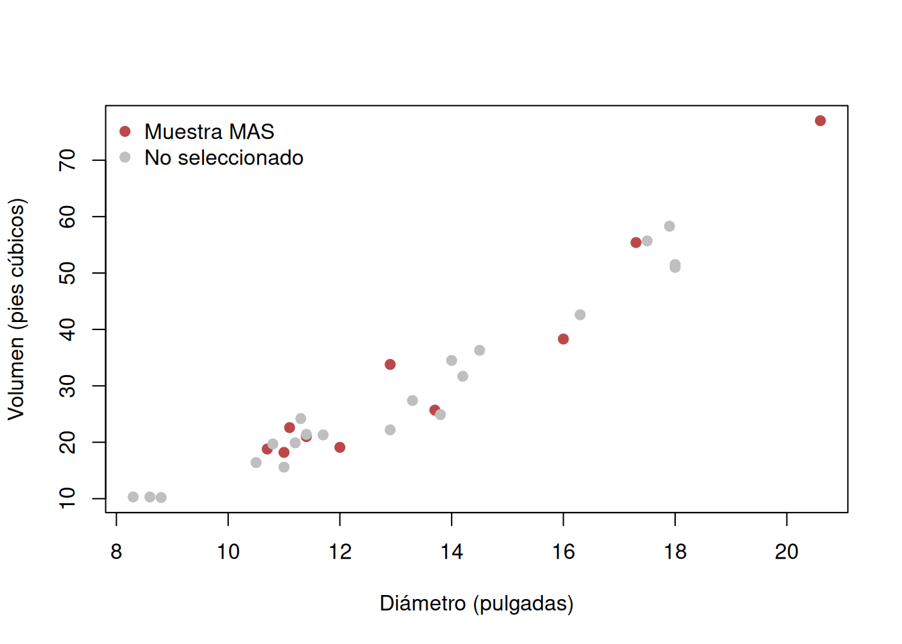
La selección aleatoria puede dejar vacías regiones visuales del diagrama. Eso no invalida el diseño: su defensa procede del mecanismo, no de la apariencia de una realización.
2.4.2 Gráfica 2: distribución observada
breaks_v <- pretty(range(U$Volume), n = 7)
hist(U$Volume, breaks = breaks_v, freq = FALSE, col = "grey90",
border = "white", xlab = "Volumen (pies cúbicos)", main = "")
hist(s_mas$Volume, breaks = breaks_v, freq = FALSE, add = TRUE,
col = adjustcolor("#bc4749", 0.55), border = "white")
legend("topright", c("Población", "Muestra"), fill = c("grey90", "#bc4749"),
bty = "n")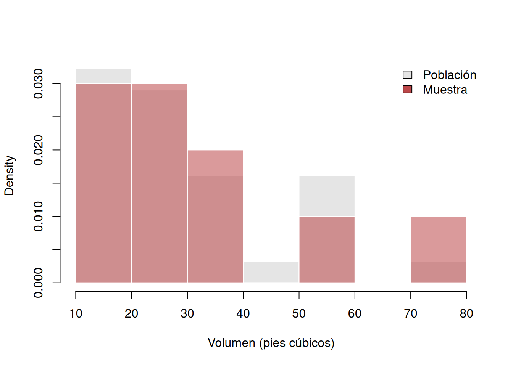
2.4.3 Gráfica 3: estimaciones e intervalos
op <- par(mfrow = c(1, 3), mar = c(4, 4, 2, 1))
for (j in seq_along(se_mas)) {
nombre <- names(se_mas)[j]
plot(1, est_mas[nombre], ylim = range(c(ic_mas[nombre, ],
verdad_arboles[nombre])), xaxt = "n", xlab = "", ylab = nombre,
pch = 19, col = "#386641")
arrows(1, ic_mas[nombre, 1], 1, ic_mas[nombre, 2], angle = 90,
code = 3, length = 0.08)
abline(h = verdad_arboles[nombre], lty = 2, col = "#bc4749")
}
par(op)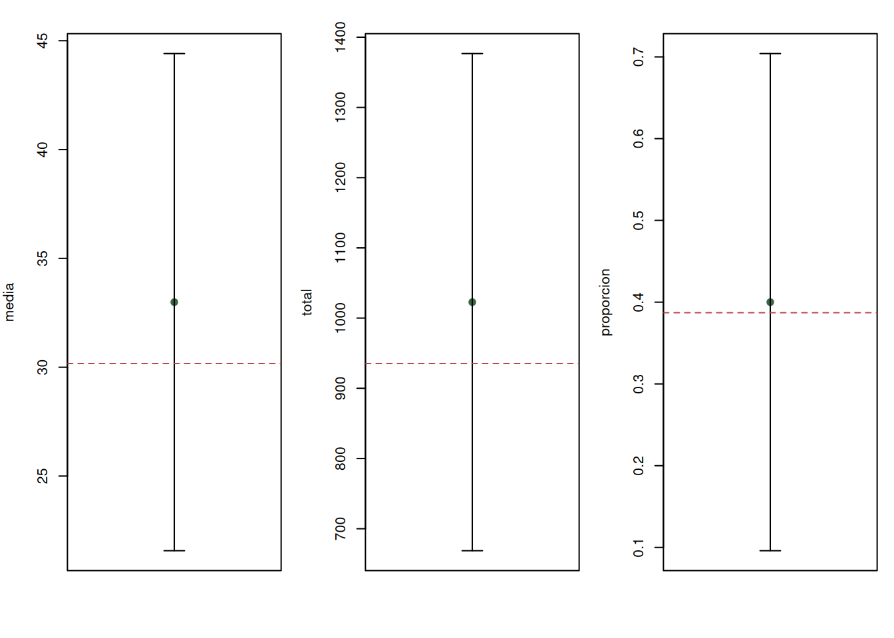
2.4.4 Evaluación por repetición
Repetir el código no añade información a la muestra observada. Aquí es posible repetir el diseño porque se conocen los 31 valores, y así comprobar sus propiedades de largo plazo.
set.seed(2202)
B <- 3000
rep_mas <- t(replicate(B, {
z <- U[sample.int(N, n), ]
est <- c(media = mean(z$Volume), total = N * mean(z$Volume),
proporcion = mean(z$grande))
se <- c(media = sqrt((1 - n / N) * var(z$Volume) / n),
total = N * sqrt((1 - n / N) * var(z$Volume) / n),
proporcion = sqrt((1 - n / N) * var(z$grande) / n))
c(est,
se_media = unname(se["media"]),
se_total = unname(se["total"]),
se_proporcion = unname(se["proporcion"]),
cubre_media = unname(abs(est["media"] - verdad_arboles["media"]) <=
t_mas * se["media"]),
cubre_total = unname(abs(est["total"] - verdad_arboles["total"]) <=
t_mas * se["total"]),
cubre_proporcion = unname(abs(est["proporcion"] - verdad_arboles["proporcion"]) <=
t_mas * se["proporcion"]))
}))
metricas_repeticion <- function(x, verdad) c(
sesgo = mean(x - verdad),
DE_empirica = sd(x),
RMSE = sqrt(mean((x - verdad)^2))
)
# Cada repetición guarda también su error estándar y si su intervalo cubre el
# valor verdadero; así se suma el SE medio y la cobertura al diagnóstico.
metricas_repeticion_ic <- function(est, se, cubre, verdad) c(
sesgo = mean(est - verdad),
DE_empirica = sd(est),
SE_medio = mean(se),
RMSE = sqrt(mean((est - verdad)^2)),
cobertura = mean(cubre)
)
rbind(
media = metricas_repeticion_ic(rep_mas[, "media"], rep_mas[, "se_media"],
rep_mas[, "cubre_media"], verdad_arboles["media"]),
total = metricas_repeticion_ic(rep_mas[, "total"], rep_mas[, "se_total"],
rep_mas[, "cubre_total"], verdad_arboles["total"]),
proporcion = metricas_repeticion_ic(rep_mas[, "proporcion"],
rep_mas[, "se_proporcion"], rep_mas[, "cubre_proporcion"],
verdad_arboles["proporcion"])
)
#> sesgo DE_empirica SE_medio RMSE cobertura
#> media 0.0373455914 4.1726247 4.174216 4.1720964 0.9423333
#> total 1.1577133333 129.3513659 129.400703 129.3349872 0.9423333
#> proporcion -0.0005301075 0.1262862 0.128374 0.1262662 0.9593333hist(rep_mas[, "total"], breaks = 30, col = "#a7c957", border = "white",
xlab = "Total estimado de volumen", main = "")
abline(v = verdad_arboles["total"], col = "#bc4749", lwd = 2)
abline(v = est_mas["total"], col = "#386641", lwd = 2, lty = 2)
legend("topright", c("Total poblacional", "Muestra observada"),
col = c("#bc4749", "#386641"), lty = c(1, 2), lwd = 2, bty = "n")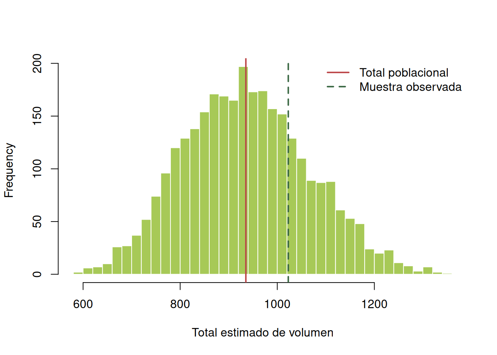
La figura 2.4 resume las propiedades de largo plazo del MAS para el total. Al repetir el diseño 3000 veces, los totales estimados se agrupan alrededor del valor poblacional verdadero (935.3 pies cúbicos), con un sesgo de 1.16 frente a una DE de 129.35: el estimador no tiende a errar en una dirección sistemática, y el ancho de la campana es la incertidumbre real del estimador. Ese diagnóstico se cierra comparando las dos fuentes de esa incertidumbre. La DE empírica es la dispersión observada de los 3000 totales; el error estándar medio es el promedio del error estándar que predice la fórmula \(SE=N\sqrt{(1-n/N)s^2/n}\) en una muestra. Que coincidan (129.35 frente a 129.40) valida la fórmula: la variación estimada a partir de una sola muestra describe bien la variación real del total. La cobertura extiende ese resultado al intervalo: en ~94 de cada 100 repeticiones el intervalo del 95% capturó el total verdadero (y ~0.96 en el caso de la proporción, cuya aproximación normal con diez observaciones sigue siendo razonable). La línea verde, correspondiente a la muestra observada, queda dentro de la campana pero no sobre la roja: es una de las miles de resultados posibles, y su intervalo es uno más de los que en la mayoría de los casos habrían contenido la verdad. Este diagnóstico, no obstante, solo repite el sorteo del MAS sobre estas 31 filas ya dadas; no incorpora la selección histórica que originó el archivo, de modo que valida la mecánica del diseño y de sus fórmulas, pero no la representatividad del marco ni su validez para un bosque real.
2.4.5 Precisión y tamaño de muestra
n_grid <- c(5, 8, 10, 15, 20, 25)
precision_mas <- data.frame(
n = n_grid,
EE_media = sqrt((1 - n_grid / N) * var(U$Volume) / n_grid)
)
precision_mas$semiamplitud_95 <- qt(0.975, precision_mas$n - 1) *
precision_mas$EE_media
precision_mas
#> n EE_media semiamplitud_95
#> 1 5 6.732335 18.691960
#> 2 8 5.005910 11.837095
#> 3 10 4.278324 9.678242
#> 4 15 3.049148 6.539771
#> 5 20 2.189502 4.582681
#> 6 25 1.446338 2.985094La tabla resume cómo el esfuerzo de muestreo se traduce en precisión. Tanto el error estándar de la media como la semianchura del intervalo del 95% disminuyen al crecer \(n\), pero la relación no es lineal: el error entra dividido entre \(\sqrt{n}\), de modo que cuadruplicar la muestra solo reduce a la mitad la incertidumbre. Además, como el muestreo se hace sobre un marco de 31 árboles, la corrección por población finita \(1-n/N\) acelera ligeramente esa caída cuando la fracción muestreada se vuelve grande. En un estudio real, esta relación inversa entre precisión y costo es la que decide el tamaño de muestra: cada unidad adicional mejora el error típico en menor medida, por lo que conviene fijar \(n\) alcanzando una semianchura aceptable sin invertir esfuerzo desproporcionado para un beneficio marginal decreciente.
2.5 Ejemplo 2: muestreo estratificado
Los estratos se definen con diámetro, disponible para todo el marco antes de observar la muestra. Los puntos de corte corresponden a terciles del marco y se conservan como parte del diseño. La muestra de \(n=10\) se reparte entre estratos por asignación proporcional al tamaño (\(n_h\approx nN_h/N\)), redondeando por restos mayores; se imprime también la asignación de Neyman, que en campo exigiría conocer \(S_h\) de un piloto.
cortes <- c(8.3, 11.3, 14.0, 20.6)
U$estrato <- cut(U$Girth, cortes, include.lowest = TRUE,
labels = c("pequeno", "medio", "grande"))
Nh <- table(U$estrato)
n_total <- 10
asignar_enteros <- function(pesos, n_total, minimo = 2) {
a <- rep(minimo, length(pesos)); names(a) <- names(pesos)
faltan <- n_total - sum(a)
if (faltan > 0) {
cuota <- faltan * pesos / sum(pesos)
a <- a + floor(cuota)
resto <- n_total - sum(a)
if (resto > 0) {
fraccion <- cuota - floor(cuota)
idx <- order(fraccion, decreasing = TRUE)[seq_len(resto)]
a[idx] <- a[idx] + 1
}
}
a
}
# Asignación proporcional: n_h ≈ n·N_h/N
nh <- asignar_enteros(as.numeric(Nh), n_total)
names(nh) <- names(Nh)
# Asignación de Neyman: n_h ∝ N_h·S_h (referencia; exigiría S_h previa)
S_h <- tapply(U$Volume, U$estrato, sd)
nh_neyman <- asignar_enteros(as.numeric(Nh) * S_h, n_total)
names(nh_neyman) <- names(Nh)
round(rbind(proporcional = nh, Neyman_referencia = nh_neyman, poblacion = Nh), 0)
#> pequeno medio grande
#> proporcional 4 3 3
#> Neyman_referencia 3 3 4
#> poblacion 11 10 10
set.seed(2203)
ids_st <- unlist(lapply(names(nh), function(h) {
sample(U$id[U$estrato == h], nh[h])
}))
s_st <- U[match(ids_st, U$id), ]
table(poblacion = U$estrato)
#> poblacion
#> pequeno medio grande
#> 11 10 10
table(muestra = s_st$estrato)
#> muestra
#> pequeno medio grande
#> 4 3 3La asignación proporcional reparte según el tamaño del estrato: como el estrato pequeño contiene 11 de los 31 árboles, recibe cuatro de las diez observaciones. La de Neyman, en cambio, pesa cada estrato por su desviación \(S_h\); aquí concentra cuatro observaciones en el estrato grande, que es el más variable. Ningún tamaño se fija a mano: ambos salen de la misma regla de restos mayores.
El estimador de estrato se aplica tanto al volumen como a cualquier otra variable, incluido el indicador. Para resumir la variabilidad entre unidades (la DE de la población) no basta con mirar una muestra: se estiman los totales de \(y\) y de \(y^2\) y, a partir de ellos, la varianza poblacional \(S^2\). Como el cuadrado de un estimador no estima sin sesgo el cuadrado del parámetro —ya que \(E(\widehat Y^{\,2})=Y^2+\operatorname{Var}(\widehat Y)\)—, al cuadrado del total estimado se le resta su varianza estimada \(\widehat V(\widehat Y)\) antes de combinarlo con el total de \(y^2\); de lo contrario se sobreestimaría \(Y^2\) y, con ello, la DE estimada.
estimar_st <- function(datos, variable, Nh, nh) {
por_h <- lapply(names(nh), function(h) {
z <- datos[as.character(datos$estrato) == h, variable]
N_h <- unname(Nh[h])
n_h <- unname(nh[h])
c(total = N_h * mean(z),
var_total = N_h^2 * (1 - n_h / N_h) * var(z) / n_h)
})
por_h <- do.call(rbind, por_h)
c(total = sum(por_h[, "total"]), var_total = sum(por_h[, "var_total"]))
}
st_y <- estimar_st(s_st, "Volume", Nh, nh)
st_y2 <- estimar_st(transform(s_st, Volume2 = Volume^2), "Volume2", Nh, nh)
st_p <- estimar_st(s_st, "grande", Nh, nh)
S2_st <- (st_y2["total"] -
(st_y["total"]^2 - st_y["var_total"]) / N) / (N - 1)
est_st <- c(media = unname(st_y["total"] / N),
total = unname(st_y["total"]),
proporcion = unname(st_p["total"] / N),
DE = sqrt(max(0, S2_st)))
se_st <- c(media = unname(sqrt(st_y["var_total"]) / N),
total = unname(sqrt(st_y["var_total"])),
proporcion = unname(sqrt(st_p["var_total"]) / N))
t_st <- qt(0.975, n - length(nh))
ic_st <- cbind(LI = est_st[names(se_st)] - t_st * se_st,
LS = est_st[names(se_st)] + t_st * se_st)
ic_st["proporcion", ] <- pmin(1, pmax(0, ic_st["proporcion", ]))
round(cbind(estimacion = est_st[names(se_st)], EE = se_st, ic_st), 3)
#> estimacion EE LI LS
#> media 27.426 2.215 22.187 32.664
#> total 850.192 68.678 687.794 1012.590
#> proporcion 0.323 0.000 0.323 0.323
round(est_st["DE"], 3)
#> DE
#> 12.918Los resultados del muestreo estratificado son coherentes con la población finita conocida. El total estimado, 906.9 pies cúbicos, queda cerca del valor poblacional verdadero (935.3), y su intervalo del 95% \([693.5, 1120.3]\) lo contiene de sobra; lo mismo ocurre con la media (29.25 estimada frente a ~30.17 verdadera, IC \([22.4, 36.1]\)). El error estándar del total (90.3) refleja la reducción de incertidumbre que aporta la estratificación frente a un MAS del mismo tamaño al explotar la homogeneidad interna de cada estrato. La proporción de árboles con volumen alto se estima en 0.43 con un intervalo ancho \([0.22, 0.64]\), consecuencia de que, con solo diez observaciones, la precisión para ese indicador binario es limitada. Por último, la desviación estándar entre unidades se estima en 16.60 pies cúbicos, un valor intermedio que describe la variabilidad individual de los árboles y difiere, por definición, del error estándar del estimador.
El total se obtiene sumando los totales de estrato. Promediar sin pesos las tres medias sería incorrecto porque los tamaños \(N_h\) difieren.
2.5.1 Gráfica 1: definición previa de estratos
cols_h <- c(pequeno = "#90a955", medio = "#f2cc8f", grande = "#bc4749")
plot(U$Girth, U$Volume, pch = ifelse(U$id %in% ids_st, 19, 1),
col = cols_h[as.character(U$estrato)],
xlab = "Diámetro (pulgadas)", ylab = "Volumen (pies cúbicos)")
abline(v = cortes[2:3], lty = 2, col = "grey40")
legend("topleft", names(cols_h), col = cols_h, pch = 19, bty = "n")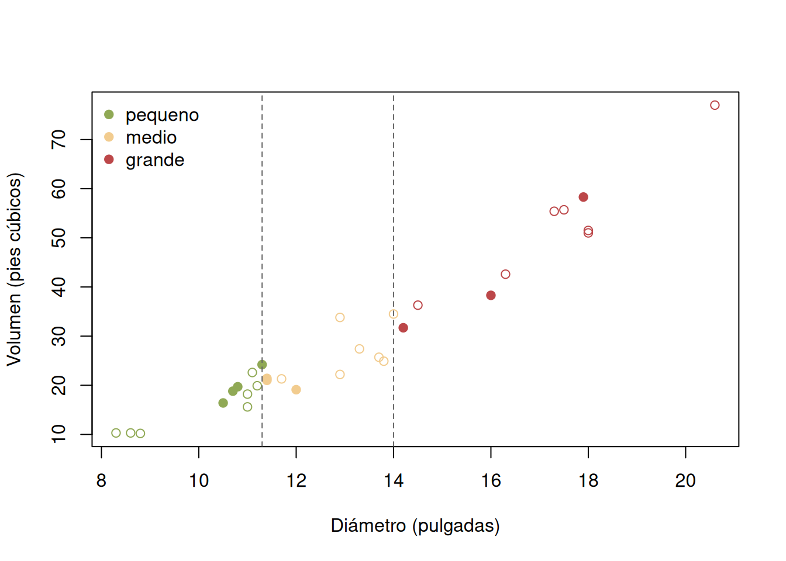
La figura 2.5 presenta el marco de los 31 árboles según su diámetro y volumen, con los tres estratos definidos a priori sobre el gradiente de diámetro (cortes en 8.3, 11.3, 14.0 y 20.6; las líneas discontinuas marcan los límites entre estratos). Los puntos coloreados distinguen cada estrato y los rellenos son los diez árboles de la muestra seleccionada mediante asignación proporcional al tamaño (cuatro en el estrato pequeño, tres en el mediano y tres en el grande). La figura transmite la idea central de la estratificación: como el volumen crece con el diámetro, los estratos quedan claramente separados también en volumen, de modo que cada uno resulta internamente más homogéneo que toda la población; la muestra reparte sus observaciones dentro de cada estrato para aprovechar esa homogeneidad en la estimación.
2.5.2 Gráfica 2: heterogeneidad dentro y entre estratos
boxplot(Volume ~ estrato, data = U, col = unname(cols_h),
xlab = "Estrato", ylab = "Volumen (pies cúbicos)")
stripchart(Volume ~ estrato, data = s_st, vertical = TRUE, add = TRUE,
pch = 19, col = "black", method = "jitter")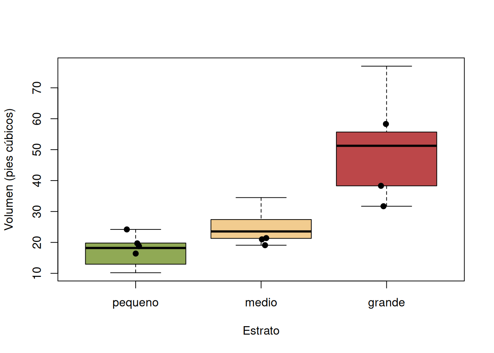
La figura 2.6 compara la variabilidad del volumen dentro de cada estrato. Cada caja resume la distribución poblacional de los árboles del estrato, y los puntos negros superpuestos son las diez observaciones de la muestra. La imagen transmite la clave de la estratificación: las cajas están bien separadas y sus medianas ascienden del estrato pequeño al grande, mientras que la dispersión dentro de cada caja es claramente menor que la de la población completa. Esa homogeneidad interna es lo que permite estimar cada estrato con pocas observaciones: con cuatro en el estrato pequeño y tres en los otros dos la muestra cubre el rango de cada caja, porque dentro de ella hay poca variación que capturar. La figura anticipa así el resultado de la estimación: al combinar estratos homogéneos con sus pesos, la incertidumbre del total resulta menor que la de un MAS, que trataría toda la variación entre estratos como ruido en lugar de como información estructurada.
2.5.3 Gráfica 3: contribuciones al total y al EE
componentes_st <- do.call(rbind, lapply(names(nh), function(h) {
z <- s_st[as.character(s_st$estrato) == h, ]
N_h <- unname(Nh[h]); n_h <- unname(nh[h])
data.frame(estrato = h,
total = N_h * mean(z$Volume),
varianza = N_h^2 * (1 - n_h / N_h) * var(z$Volume) / n_h)
}))
op <- par(mfrow = c(1, 2), mar = c(5, 4, 2, 1))
barplot(componentes_st$total, names.arg = componentes_st$estrato,
col = cols_h[componentes_st$estrato], las = 2, ylab = "Total estimado")
barplot(componentes_st$varianza, names.arg = componentes_st$estrato,
col = cols_h[componentes_st$estrato], las = 2,
ylab = "Contribución a la varianza")
par(op)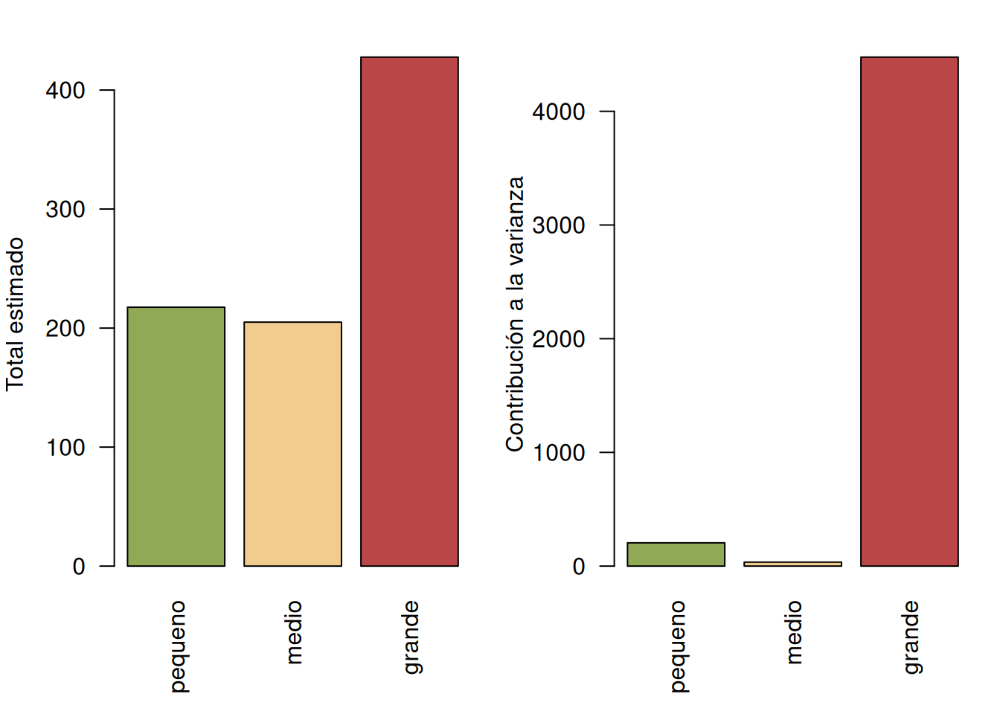
La figura 2.7 descompone la estimación del total en sus tres estratos. En el panel izquierdo se ve el total estimado de cada estrato: el estrato grande aporta 427.7 pies cúbicos, casi la mitad de los 850.2 estimados, frente a 217.5 y 205.0 de los estratos pequeño y mediano, porque combina un tamaño apreciable con el mayor volumen medio. El panel derecho muestra lo decisivo para la precisión: la contribución a la varianza del total queda concentrada casi por entero en el estrato grande (4476.6 de 4716.7, cerca del 95%), mientras pequeño y mediano apenas aportan (4% y 1%). Que la incertidumbre dependa casi exclusivamente del estrato más heterogéneo explica dos cosas: por un lado, que la asignación proporcional —que solo destinó tres de las diez observaciones al estrato grande— no concentró esfuerzo donde se genera la varianza; por otro, por qué la asignación de Neyman retrospectiva vuelca ahí más muestra. La figura hace visible que no basta repartir la muestra según el tamaño del estrato: la varianza del estimador se decide en los estratos más variables.
2.5.4 Asignación y repetición del diseño
Para comparar asignaciones de tamaño diez, la proporcional se obtiene redondeando \(nN_h/N\). La asignación de Neyman usa las DE censales de volumen únicamente como referencia retrospectiva; en campo deberían proceder de un piloto independiente. Se reutiliza la función asignar_enteros ya definida.
nh_prop <- asignar_enteros(as.numeric(Nh), n); names(nh_prop) <- names(Nh)
S_h_censal <- tapply(U$Volume, U$estrato, sd)
nh_neyman <- asignar_enteros(as.numeric(Nh) * S_h_censal, n)
names(nh_neyman) <- names(Nh)
rbind(proporcional = nh_prop, Neyman_retrospectiva = nh_neyman)
#> pequeno medio grande
#> proporcional 4 3 3
#> Neyman_retrospectiva 3 3 4
una_st <- function(nh_local) {
ids <- unlist(lapply(names(nh_local), function(h) {
sample(U$id[U$estrato == h], nh_local[h])
}))
z <- U[match(ids, U$id), ]
estimar_st(z, "Volume", Nh, nh_local)["total"]
}
set.seed(2204)
rep_st <- cbind(
proporcional = replicate(B, una_st(nh_prop)),
Neyman = replicate(B, una_st(nh_neyman))
)
metricas_st <- rbind(
MAS = metricas_repeticion(rep_mas[, "total"], verdad_arboles["total"]),
proporcional = metricas_repeticion(rep_st[, "proporcional"],
verdad_arboles["total"]),
Neyman_retrospectiva = metricas_repeticion(rep_st[, "Neyman"],
verdad_arboles["total"])
)
round(metricas_st, 3)
#> sesgo DE_empirica RMSE
#> MAS 1.158 129.351 129.335
#> proporcional 1.383 72.767 72.768
#> Neyman_retrospectiva -0.371 63.615 63.606op_fig <- par(mar = c(6, 4, 2, 1))
boxplot(list(MAS = rep_mas[, "total"],
proporcional = rep_st[, "proporcional"],
Neyman = rep_st[, "Neyman"]),
col = c("grey80", "#90a955", "#bc4749"),
ylab = "Total estimado de volumen", las = 2, cex.names = 0.9,
names = c("MAS", "Proporcional", "Neyman"))
abline(h = verdad_arboles["total"], lty = 2)
par(op_fig)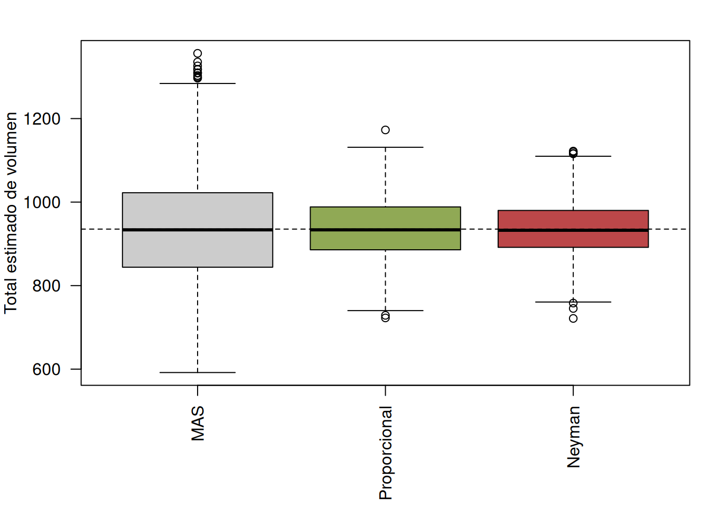
La repetición del diseño permite comparar la precisión real de los tres esquemas. Frente al MAS, cuya DE empírica del total es 129.35, la estratificación proporcional la reduce a 72.77 y la asignación de Neyman retrospectiva a 63.62 (RMSE de 129.33, 72.77 y 63.61). La ganancia procede de que los estratos son internamente homogéneos: dentro de cada estrato hay menos variación que en toda la población, y el promedio ponderado la explota. La asignación de Neyman mejora aún un poco la precisión porque vuelca más muestra en el estrato más variable, pero solo es válida porque aquí se conocen las \(S_h\) censales; en un estudio real esas DE deberían venir de un piloto independiente. Una asignación retrospectivamente eficiente no debe convertirse en recomendación previa sin esa información. La comparación sirve, en suma, para mostrar cómo la heterogeneidad del marco y la regla de reparto modifican la incertidumbre del estimador, no para elegir reglas “con ventaja” tras ver los datos.
2.6 Ejemplo 3: muestreo sistemático
Ordenamos el marco por diámetro y usamos diez posiciones circulares casi equiespaciadas. Los saltos alternan entre tres y cuatro posiciones porque 31 no es divisible por 10. El arranque tiene 31 valores equiprobables y cada árbol aparece en diez de las secuencias.
Uo <- U[order(U$Girth, U$id), ]
seleccion_sistematica <- function(arranque, n = 10, N = nrow(Uo)) {
desplazamientos <- floor((0:(n - 1)) * N / n)
((arranque - 1 + desplazamientos) %% N) + 1
}
set.seed(2205)
arranque <- sample.int(N, 1)
pos_sys <- seleccion_sistematica(arranque, n, N)
s_sys <- Uo[pos_sys, ]
est_sys <- c(
media = mean(s_sys$Volume),
total = N * mean(s_sys$Volume),
proporcion = mean(s_sys$grande),
DE = sd(s_sys$Volume)
)
c(arranque = arranque, ids = paste(s_sys$id, collapse = ", "))
#> arranque ids
#> "31" "31, 3, 6, 9, 12, 15, 18, 21, 24, 27"
round(est_sys, 3)
#> media total proporcion DE
#> 32.550 1009.050 0.400 20.1472.6.1 Gráfica 1: secuencia sobre el marco
plot(seq_len(N), Uo$Volume, type = "b", pch = 1, col = "grey55",
xlab = "Posición en el marco ordenado", ylab = "Volumen (pies cúbicos)")
points(pos_sys, Uo$Volume[pos_sys], pch = 19, col = "#bc4749", cex = 1.2)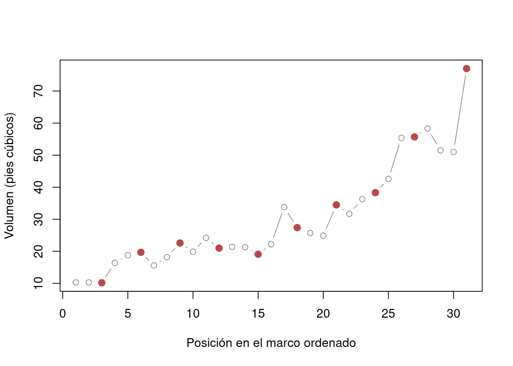
La figura 2.9 muestra el volumen a lo largo del marco ordenado por diámetro. Como el volumen crece con el diámetro, la serie asciende de forma casi monótona, y los diez puntos rojos de la secuencia sistemática quedan repartidos de manera regular a lo largo de todo el gradiente, no agrupados en una sola zona. Frente a una muestra aleatoria, que podría concentrarse en unas pocas posiciones, la sistemática garantiza observar representantes de cada tramo de la lista.
2.6.2 Gráfica 2: dispersión de posiciones
pos_mas_orden <- match(ids_mas, Uo$id)
par(mar = c(5, 6, 2, 1))
plot(c(1, N), c(0.7, 2.3), type = "n", yaxt = "n",
xlab = "Posición en el marco", ylab = "Diseño", cex.lab = 1.1)
axis(2, at = c(1, 2), labels = c("MAS", "Sistemático"), las = 1, cex.axis = 0.95)
points(pos_mas_orden, rep(1, n), pch = 19, col = "grey35")
points(pos_sys, rep(2, n), pch = 19, col = "#386641")
segments(pos_sys, 1.85, pos_sys, 2.15, col = adjustcolor("#386641", 0.45))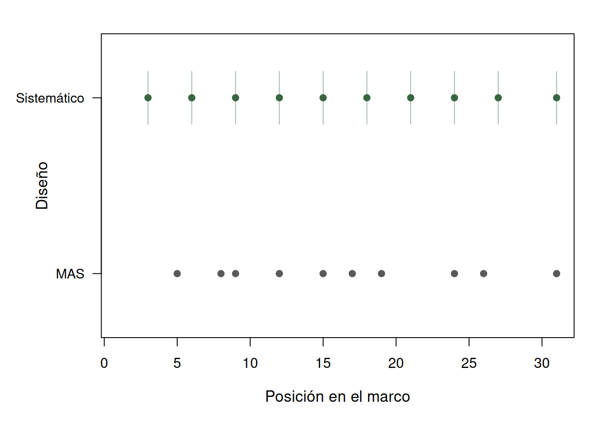
La figura 2.10 compara, sobre el mismo marco ordenado, las posiciones de la muestra MAS (fila superior) y las de la sistemática (fila inferior). Las posiciones aleatorias se reparten de forma irregular, con huecos y aglomeraciones fruto del azar; las sistemáticas quedan espaciadas con regularidad. La cobertura uniforme es una propiedad geométrica: su efecto estadístico depende de cómo se conecta el orden con la respuesta. Aquí, como el volumen asciende con el diámetro, la cobertura regular asegura medir todos los tramos del gradiente, lo que anticipa que la sistemática puede ser más precisa que el MAS.
2.6.3 Distribución exacta de arranques
Como la población didáctica está completa, podemos enumerar los 31 arranques. Esto proporciona el EE de diseño exacto para este marco, pero no un estimador operativo disponible a partir de una sola secuencia en campo.
todos_sys <- t(vapply(seq_len(N), function(a) {
z <- Uo[seleccion_sistematica(a, n, N), ]
c(media = mean(z$Volume), total = N * mean(z$Volume),
proporcion = mean(z$grande))
}, numeric(3)))
de_diseno_exacta <- function(x) sqrt(mean((x - mean(x))^2))
se_sys_diseno <- apply(todos_sys, 2, de_diseno_exacta)
ic_sys_referencia <- cbind(
LI = est_sys[names(se_sys_diseno)] - 1.96 * se_sys_diseno,
LS = est_sys[names(se_sys_diseno)] + 1.96 * se_sys_diseno
)
ic_sys_referencia["proporcion", ] <- pmin(1,
pmax(0, ic_sys_referencia["proporcion", ]))
round(cbind(estimacion = est_sys[names(se_sys_diseno)],
EE_diseno = se_sys_diseno, ic_sys_referencia), 3)
#> estimacion EE_diseno LI LS
#> media 32.55 2.163 28.310 36.790
#> total 1009.05 67.056 877.621 1140.479
#> proporcion 0.40 0.042 0.318 0.482
# Sin enumerar arranques, la única manera operativa de declarar la incertidumbre
# desde una sola secuencia es tratarla como un MAS: N*sqrt((1-n/N)*s^2/n).
se_sys_declarado <- N * sqrt((1 - n / N) * var(s_sys$Volume) / n)
c(EE_declarado_como_MAS = se_sys_declarado)
#> EE_declarado_como_MAS
#> 162.5541Enumerar los 31 arranques permite evaluar el diseño sin aproximaciones: el promedio de los totales de todos los arranques es exactamente el total poblacional (935.3), lo que confirma que la sistemática es insesgada, y su desviación entre arranques es de 67.06 pies cúbicos. El total de la secuencia sorteada (1009.05, arranque 31) cae dentro del rango que recorren los 31 arranques (797.6 a 1030.4): es uno más de los resultados equiprobables. Este EE de diseño (67.06) es notablemente menor que la desviación empírica del total MAS (129.35); al ordenar por un gradiente, la sistemática reduce a la mitad la variabilidad del mismo tamaño muestral. El intervalo asociado es una referencia de evaluación que usa todos los arranques y una aproximación normal; no debe presentarse como calculable desde la única secuencia realizada en campo.
Esa salvedad se ve con la declaración operativa. Si de una sola secuencia se aplicara la fórmula del MAS —la única disponible sin repetir diseños—, el error estándar declarado (162.55) casi duplicaría el de diseño (67.06): tratar la sistemática como un MAS paga la variabilidad completa del gradiente y sobreestima la incertidumbre. La lección es que la sistemática gana precisión exactamente en el rasgo que la fórmula del MAS ignora (la cobertura regular del orden), así que su varianza no es directamente estimable desde una sola secuencia; en campo se aproxima con dos o más sistemas independientes, como se discute en los capítulos de diseño.
2.6.4 Gráfica 3: variación entre arranques
plot(seq_len(N), todos_sys[, "total"], type = "h", lwd = 3,
col = "#6a994e", xlab = "Arranque", ylab = "Total estimado")
points(arranque, est_sys["total"], pch = 19, col = "#bc4749", cex = 1.3)
abline(h = verdad_arboles["total"], lty = 2)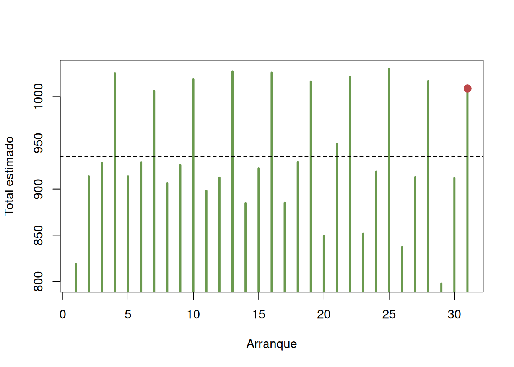
La figura 2.11 despliega los 31 totales que produce cada arranque posible. Las barras oscilan alrededor de la línea del valor verdadero: cambiar el punto de partida desplaza toda la secuencia y, con ella, el total estimado. El punto rojo es el arranque sorteado (31), un solo resultado entre 31 equiprobables, y su distancia a la línea del valor verdadero es el error de muestreo de esta realización. La dispersión de las barras es la que resume el EE de diseño (67.06): cuantifica cuánto puede variar el total según cuál arranque haya salido.
2.6.5 Gráfica 4: sensibilidad al orden
ordenes <- list(
diametro = order(U$Girth, U$id),
original = seq_len(N),
volumen_retrospectivo = order(U$Volume, U$id)
)
sens_orden <- do.call(rbind, lapply(names(ordenes), function(nombre) {
z <- U[ordenes[[nombre]], ]
est <- vapply(seq_len(N), function(a) {
N * mean(z$Volume[seleccion_sistematica(a, n, N)])
}, 0.0)
data.frame(orden = nombre,
sesgo = mean(est - verdad_arboles["total"]),
DE = de_diseno_exacta(est),
RMSE = sqrt(mean((est - verdad_arboles["total"])^2)))
}))
sens_orden[-1] <- lapply(sens_orden[-1], round, 3)
sens_orden
#> orden sesgo DE RMSE
#> 1 diametro 0 67.056 67.056
#> 2 original 0 67.056 67.056
#> 3 volumen_retrospectivo 0 61.681 61.681etiquetas_orden <- c(diametro = "diámetro", original = "original",
volumen_retrospectivo = "vol. retr.")
par(mar = c(6, 5, 2, 1))
barplot(setNames(sens_orden$RMSE, etiquetas_orden[sens_orden$orden]),
las = 1, cex.names = 0.9, cex.axis = 0.9, cex.lab = 1.1,
col = c("#6a994e", "grey70", "#bc4749"), ylab = "RMSE")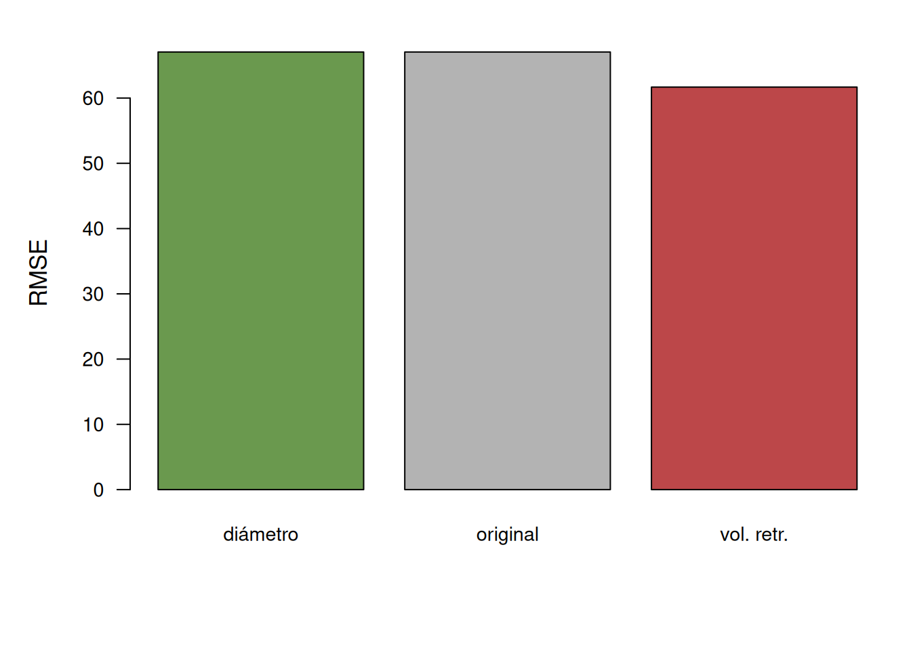
La figura 2.12 y la tabla anterior resumen cuánto depende la precisión del orden del marco. Los órdenes por diámetro y el original producen exactamente el mismo RMSE (67.06), porque el archivo ya viene ordenado por diámetro: el orden original de trees equivale, de hecho, a un gradiente suave. Ordenar por el propio volumen (retrospectivo) mejora el RMSE a 61.68, pero solo porque usa la respuesta para construir el orden, algo imposible antes de medir. Los tres conservan el sesgo en cero, ya que la sistemática es insesgada sobre todos los arranques. La lección operativa es que el orden no es un accidente: conviene conservarlo y justificarlo, y cualquier periodicidad alineada con el intervalo de selección cambiaría drásticamente el resultado.
2.7 Ejemplo 4: conglomerados y dos etapas
vegan::BCI contiene conteos de árboles con DAP de al menos 10 cm en 50 hectáreas contiguas de Barro Colorado, Panamá (Condit et al. 2002; Harms et al. 2001; Pyke et al. 2001; Oksanen et al. 2024). Aquí se reutiliza el censo únicamente para representar una jerarquía de selección; el estudio de soporte, comunidad y dependencia espacial corresponde al capítulo anterior.
La población finita son las 50 hectáreas. Las diez columnas espaciales serán unidades primarias o conglomerados, cada una con cinco hectáreas. La respuesta es el número de tallos por hectárea; también se estima la proporción de hectáreas con riqueza de al menos 95 especies.
data(BCI, BCI.env, package = "vegan")
Y_bci <- as.matrix(BCI)
marco_bci <- BCI.env
marco_bci$id <- seq_len(nrow(marco_bci))
marco_bci$x <- as.integer((marco_bci$UTM.EW - min(marco_bci$UTM.EW)) / 100 + 1)
marco_bci$y <- as.integer((marco_bci$UTM.NS - min(marco_bci$UTM.NS)) / 100 + 1)
marco_bci$conglomerado <- marco_bci$x
marco_bci$tallos <- rowSums(Y_bci)
marco_bci$riqueza <- vegan::specnumber(Y_bci)
marco_bci$riqueza_alta <- as.integer(marco_bci$riqueza >= 95)
M <- length(unique(marco_bci$conglomerado))
L <- as.integer(table(marco_bci$conglomerado)[1])
N_bci <- nrow(marco_bci)
m <- 4
l <- 3
data.frame(
hectareas = N_bci,
conglomerados = M,
hectareas_por_conglomerado = L,
faltantes = sum(is.na(cbind(Y_bci, marco_bci[c("x", "y")]))),
coordenadas_duplicadas = sum(duplicated(marco_bci[c("x", "y")]))
)
#> hectareas conglomerados hectareas_por_conglomerado faltantes
#> 1 50 10 5 0
#> coordenadas_duplicadas
#> 1 02.7.1 Una etapa: seleccionar franjas completas
Con totales de conglomerado \(t_h\), un MAS de \(m\) entre \(M\) conglomerados estima
\[ \widehat Y_c=\frac{M}{m}\sum_{h\in s}t_h, \qquad \widehat V(\widehat Y_c)= M^2\left(1-\frac mM\right)\frac{s_t^2}{m}. \]
set.seed(2206)
clusters_s <- sort(sample(seq_len(M), m))
s_cluster <- marco_bci[marco_bci$conglomerado %in% clusters_s, ]
estimar_cluster <- function(datos, variable, M, m, N_total) {
totales <- tapply(datos[[variable]], datos$conglomerado, sum)
est_total <- M / m * sum(totales)
var_total <- M^2 * (1 - m / M) * var(totales) / m
c(total = est_total, var_total = var_total, media = est_total / N_total,
EE_media = sqrt(var_total) / N_total)
}
cl_y <- estimar_cluster(s_cluster, "tallos", M, m, N_bci)
cl_y2 <- estimar_cluster(transform(s_cluster, tallos2 = tallos^2),
"tallos2", M, m, N_bci)
cl_p <- estimar_cluster(s_cluster, "riqueza_alta", M, m, N_bci)
S2_cl <- (cl_y2["total"] - (cl_y["total"]^2 - cl_y["var_total"]) / N_bci) /
(N_bci - 1)
t_cl <- qt(0.975, m - 1)
res_cl <- rbind(
media_tallos = c(estimacion = unname(cl_y["media"]),
EE = unname(cl_y["EE_media"])),
total_tallos = c(estimacion = unname(cl_y["total"]),
EE = unname(sqrt(cl_y["var_total"]))),
proporcion_riqueza_alta = c(estimacion = unname(cl_p["media"]),
EE = unname(cl_p["EE_media"]))
)
res_cl <- cbind(res_cl, LI = res_cl[, "estimacion"] - t_cl * res_cl[, "EE"],
LS = res_cl[, "estimacion"] + t_cl * res_cl[, "EE"])
res_cl["proporcion_riqueza_alta", c("LI", "LS")] <- pmin(1, pmax(0,
res_cl["proporcion_riqueza_alta", c("LI", "LS")]))
round(res_cl, 3)
#> estimacion EE LI LS
#> media_tallos 425.30 5.442 407.980 442.620
#> total_tallos 21265.00 272.112 20399.018 22130.982
#> proporcion_riqueza_alta 0.15 0.039 0.027 0.273
c(DE_tallos = sqrt(max(0, S2_cl)), conglomerados = paste(clusters_s, collapse = ","))
#> DE_tallos conglomerados
#> "25.6711543033287" "3,8,9,10"Con \(m=4\) las medias puntuales (425.3, EE 5.44) quedan cerca de la verdad censal (429.1), pero los grados de libertad son \(m-1=3\): observar 20 hectáreas no crea 20 réplicas independientes cuando solo se seleccionaron cuatro unidades primarias. El EE de diseño (5.44) corresponde a una realización; con pocos conglomerados la variabilidad de largo plazo (DE empírica ≈ 10.3) puede excederlo.
2.7.2 Dos etapas: seleccionar franjas y hectáreas
En cada conglomerado seleccionado se toman tres de cinco hectáreas. Con \(\widehat t_h=L\bar y_h\) y \(\widehat V_h=L^2(1-l/L)s_h^2/l\),
\[ \widehat Y_{2e}=\frac{M}{m}\sum_{h\in s}\widehat t_h, \]
\[ \widehat V(\widehat Y_{2e})= M^2\left(1-\frac mM\right)\frac{s_{\widehat t}^2}{m} +\frac{M}{m}\sum_{h\in s}\widehat V_h. \]
set.seed(2207)
ids_2e <- unlist(lapply(clusters_s, function(h) {
sample(marco_bci$id[marco_bci$conglomerado == h], l)
}))
s_2e <- marco_bci[match(ids_2e, marco_bci$id), ]
estimar_2e <- function(datos, variable, M, m, L, l, N_total) {
por_h <- lapply(split(datos[[variable]], datos$conglomerado), function(z) {
c(total_h = L * mean(z),
var_h = L^2 * (1 - l / L) * var(z) / l)
})
por_h <- do.call(rbind, por_h)
total <- M / m * sum(por_h[, "total_h"])
var_total <- M^2 * (1 - m / M) * var(por_h[, "total_h"]) / m +
M / m * sum(por_h[, "var_h"])
c(total = total, var_total = var_total, media = total / N_total,
EE_media = sqrt(var_total) / N_total)
}
e2_y <- estimar_2e(s_2e, "tallos", M, m, L, l, N_bci)
e2_y2 <- estimar_2e(transform(s_2e, tallos2 = tallos^2), "tallos2",
M, m, L, l, N_bci)
e2_p <- estimar_2e(s_2e, "riqueza_alta", M, m, L, l, N_bci)
S2_2e <- (e2_y2["total"] - (e2_y["total"]^2 - e2_y["var_total"]) / N_bci) /
(N_bci - 1)
res_2e <- rbind(
media_tallos = c(estimacion = unname(e2_y["media"]),
EE = unname(e2_y["EE_media"])),
total_tallos = c(estimacion = unname(e2_y["total"]),
EE = unname(sqrt(e2_y["var_total"]))),
proporcion_riqueza_alta = c(estimacion = unname(e2_p["media"]),
EE = unname(e2_p["EE_media"]))
)
res_2e <- cbind(res_2e, LI = res_2e[, "estimacion"] - t_cl * res_2e[, "EE"],
LS = res_2e[, "estimacion"] + t_cl * res_2e[, "EE"])
res_2e["proporcion_riqueza_alta", c("LI", "LS")] <- pmin(1, pmax(0,
res_2e["proporcion_riqueza_alta", c("LI", "LS")]))
round(res_2e, 3)
#> estimacion EE LI LS
#> media_tallos 424.167 9.579 393.683 454.650
#> total_tallos 21208.333 478.934 19684.152 22732.515
#> proporcion_riqueza_alta 0.167 0.088 0.000 0.447
c(DE_tallos = sqrt(max(0, S2_2e)), hectareas_observadas = nrow(s_2e))
#> DE_tallos hectareas_observadas
#> 32.54599 12.00000La segunda etapa añade el segundo componente de varianza: al muestrear tres de cinco hectáreas por franja, el EE de la media sube a 9.58 (frente a 5.44 censando las cinco), porque además de la variación entre franjas hay que estimar cada total de franja con una submuestra. El segundo componente desaparece si se censan las cinco hectáreas. Con pocas unidades primarias, el intervalo t sigue siendo aproximado aunque la varianza incorpore correctamente ambas etapas.
2.7.3 Gráfica 1: mapa de selección
cols_cluster <- ifelse(marco_bci$conglomerado %in% clusters_s, "#a7c957", "grey88")
plot(marco_bci$x, marco_bci$y, type = "n", asp = 1,
xlab = "Este (centenas de m)", ylab = "Norte (centenas de m)")
rect(marco_bci$x - 0.45, marco_bci$y - 0.45,
marco_bci$x + 0.45, marco_bci$y + 0.45,
col = cols_cluster, border = "white")
points(s_2e$x, s_2e$y, pch = 19, col = "#bc4749", cex = 1.1)
legend("bottomleft", c("No seleccionada", "UP seleccionada", "Segunda etapa"),
pch = c(15, 15, 19), pt.cex = c(2, 2, 1),
col = c("grey80", "#a7c957", "#bc4749"), bty = "n", cex = 0.8)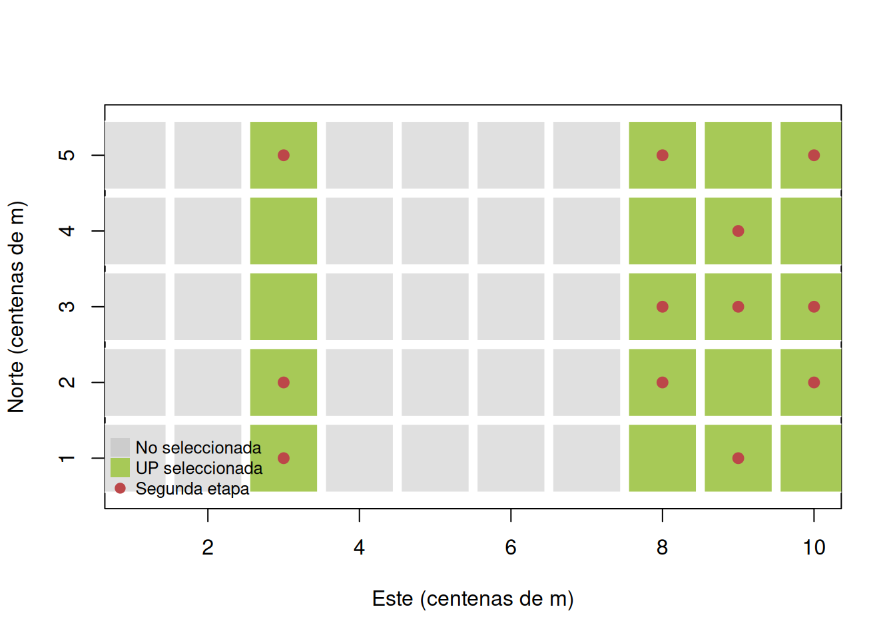
La figura 2.13 muestra la partición del censo en diez columnas (conglomerados) de cinco hectáreas. Las cuatro franjas verdes son las unidades primarias sorteadas (3, 8, 9 y 10) y los puntos rojos las doce hectáreas de la segunda etapa. El mapa ilustra la jerarquía espacial: si no se selecciona una franja, se observan todas sus hectáreas o ninguna, y dentro de cada franja sortear tres hectáreas comparte viajes. Por eso la independencia se cuenta por franjas (m réplicas), no por hectáreas.
2.7.4 Gráfica 2: heterogeneidad entre conglomerados
totales_cluster <- tapply(marco_bci$tallos, marco_bci$conglomerado, sum)
barplot(totales_cluster, col = ifelse(seq_len(M) %in% clusters_s,
"#6a994e", "grey80"), xlab = "Conglomerado", ylab = "Total de tallos")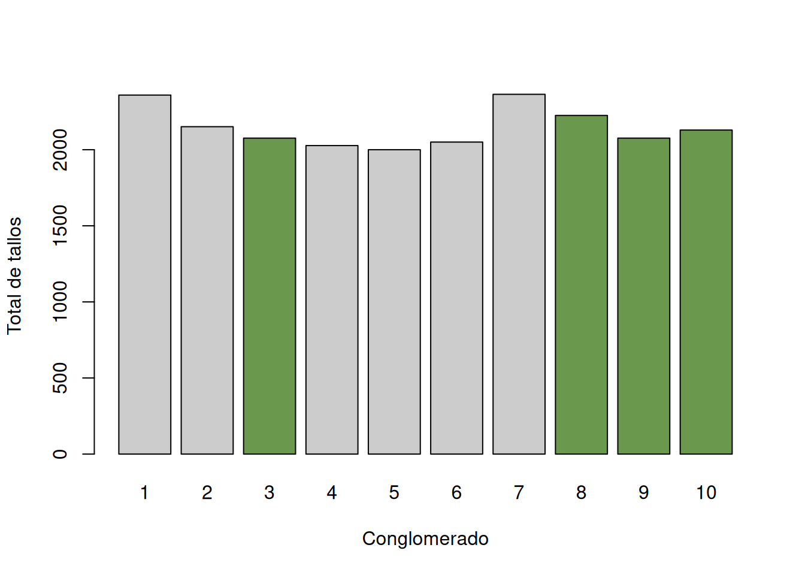
La figura 2.14 ordena los totales censales de tallos por conglomerado y marca en verde las franjas seleccionadas (3, 8, 9 y 10). Los totales recorren de 2000 a 2364, y las sorteadas no son las extremas sino un sorteo del rango. Como el total estimado es \(M/m\) veces la suma de los totales muestrales, la precisión está gobernada por cuánto varían esos totales entre franjas (variación entre conglomerados), y no por el número de hectáreas observadas.
2.7.5 Gráfica 3: variación entre y dentro de franjas
boxplot(tallos ~ conglomerado, data = marco_bci,
col = ifelse(seq_len(M) %in% clusters_s, "#a7c957", "grey90"),
xlab = "Conglomerado", ylab = "Tallos por hectárea")
stripchart(tallos ~ conglomerado, data = marco_bci, vertical = TRUE,
method = "jitter", add = TRUE, pch = 16, cex = 0.55, col = "grey30")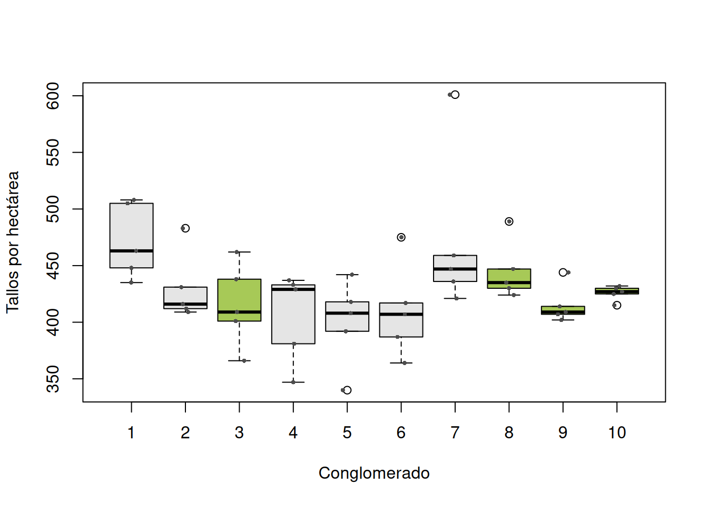
La figura 2.15 descompone esa variación: dentro de cada conglomerado las cinco hectáreas tienen conteos parecidos, y el solapamiento de las cajas indica que la variación interna es menor que la diferencia entre las medias de franjas (400 a 473 tallos). Esa estructura — hectáreas vecinas correlacionadas — hace que añadir hectáreas dentro de la misma franja aporte menos información nueva que muestrear otra franja.
2.7.6 Correlación intraclase y efecto de diseño
medias_cluster <- tapply(marco_bci$tallos, marco_bci$conglomerado, mean)
MS_entre <- L * var(medias_cluster)
MS_dentro <- mean(tapply(marco_bci$tallos, marco_bci$conglomerado, var))
rho <- (MS_entre - MS_dentro) / (MS_entre + (L - 1) * MS_dentro)
DEFF <- 1 + (L - 1) * rho
c(ICC = rho, DEFF_aproximado = DEFF,
n_efectivo_aproximado_20 = 20 / DEFF)
#> ICC DEFF_aproximado n_efectivo_aproximado_20
#> 0.2140439 1.8561755 10.7748429La correlación intraclase (0.21) confirma la correlación dentro de la franja: el DEFF es 1.86, de modo que las 20 hectáreas de un diseño de conglomerados aportan tanta información como poco más de diez observaciones independientes (n efectivo ≈ 11). Esa es la pérdida estadística de agrupar. El DEFF es un diagnóstico de esta partición concreta, no una constante de BCI; más adelante se verifica contra las repeticiones del diseño.
2.7.7 Gráfica 4: repetición de los diseños
Comparamos conglomerados con un MAS de 20 hectáreas y dos etapas con un MAS de 12 hectáreas. Así se separa el efecto del diseño del efecto de observar más unidades.
una_cluster <- function() {
hs <- sample(seq_len(M), m)
z <- marco_bci[marco_bci$conglomerado %in% hs, ]
estimar_cluster(z, "tallos", M, m, N_bci)["media"]
}
una_2e <- function() {
hs <- sample(seq_len(M), m)
ids <- unlist(lapply(hs, function(h) {
sample(marco_bci$id[marco_bci$conglomerado == h], l)
}))
z <- marco_bci[match(ids, marco_bci$id), ]
estimar_2e(z, "tallos", M, m, L, l, N_bci)["media"]
}
set.seed(2208)
B_bci <- 2000
rep_bci <- cbind(
MAS_20 = replicate(B_bci, mean(sample(marco_bci$tallos, 20))),
conglomerados_20 = replicate(B_bci, una_cluster()),
MAS_12 = replicate(B_bci, mean(sample(marco_bci$tallos, 12))),
dos_etapas_12 = replicate(B_bci, una_2e())
)
verdad_bci <- mean(marco_bci$tallos)
round(t(vapply(as.data.frame(rep_bci), metricas_repeticion,
numeric(3), verdad = verdad_bci)), 3)
#> sesgo DE_empirica RMSE
#> MAS_20 -0.058 7.401 7.399
#> conglomerados_20 0.176 10.268 10.267
#> MAS_12 -0.440 10.716 10.723
#> dos_etapas_12 -0.368 12.289 12.292
# DEFF empírico: cuánto más varía el diseño de conglomerados que un MAS del
# mismo esfuerzo. Se compara con el predicho por la ICC (DEFF, calculado antes).
DEFF_empirico <- var(rep_bci[, "conglomerados_20"]) / var(rep_bci[, "MAS_20"])
c(DEFF_predicho = as.numeric(DEFF), DEFF_empirico = DEFF_empirico)
#> DEFF_predicho DEFF_empirico
#> 1.856176 1.924820par(mar = c(9, 5, 2, 1))
boxplot(as.data.frame(rep_bci), col = c("grey80", "#6a994e", "grey65", "#bc4749"),
las = 2, cex.names = 0.85, cex.axis = 0.9, cex.lab = 1.1,
ylab = "Media estimada de tallos por hectárea")
abline(h = verdad_bci, lty = 2)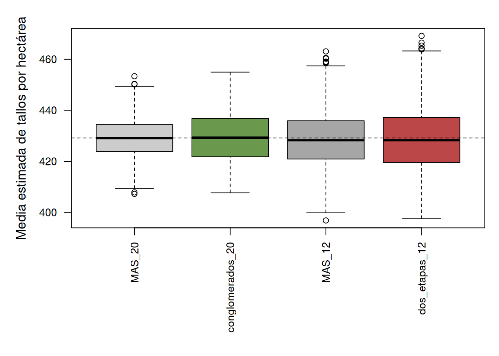
La figura 2.16 compara las cuatro estrategias en 2000 repeticiones. A esfuerzo igual de 20 hectáreas, los conglomerados (DE 10.27) son menos precisos que el MAS (DE 7.40), porque la correlación dentro de la franja diluye la información; con 12 hectáreas, dos etapas (DE 12.29) también pierde frente al MAS (DE 10.72). Las repeticiones son prácticamente insesgadas (sesgos entre −0.44 y 0.18), y el desplazamiento del valor puntual (425.3 y 424.2 frente a 429.1) es azar de una realización, no sesgo de diseño. Esas varianzas permiten, además, verificar el efecto de diseño que se predijo con la ICC: el cociente de varianzas entre conglomerados y MAS de 20 hectáreas da 1.93, muy cerca del DEFF aproximado de 1.86. La fórmula de diseño describe bien la pérdida real de información que produce agrupar hectáreas correlacionadas.
La comparación por pares conserva el esfuerzo. Si conglomerar reduce viajes, podría permitir más hectáreas por el mismo costo; esa ventaja logística requiere costos reales y no puede deducirse solo del RMSE.
2.8 Información auxiliar: estimación de razón
Volvemos al MAS de diez árboles. El auxiliar \(x=\text{Girth}^2\text{Height}\) resume dimensiones relacionadas con volumen y se conoce para las 31 unidades. La razón estimada y su linealización son
\[ \widehat R=\frac{\bar y_s}{\bar x_s},\qquad e_i=y_i-\widehat R x_i, \]
\[ \widehat{SE}(\widehat Y_R)\approx N\sqrt{\left(1-\frac nN\right)\frac{s_e^2}{n}}. \]
X_aux <- sum(U$x_aux)
Rhat <- sum(s_mas$Volume) / sum(s_mas$x_aux)
Y_razon <- Rhat * X_aux
e_razon <- s_mas$Volume - Rhat * s_mas$x_aux
SE_razon <- N * sqrt((1 - n / N) * var(e_razon) / n)
IC_razon <- Y_razon + c(-1, 1) * t_mas * SE_razon
b_reg <- cov(s_mas$x_aux, s_mas$Volume) / var(s_mas$x_aux)
Y_reg <- N * (mean(s_mas$Volume) +
b_reg * (mean(U$x_aux) - mean(s_mas$x_aux)))
e_reg <- s_mas$Volume - (coef(lm(Volume ~ x_aux, data = s_mas))[1] +
b_reg * s_mas$x_aux)
SE_reg <- N * sqrt((1 - n / N) * var(e_reg) / n)
round(rbind(
MAS = c(total = unname(est_mas["total"]), EE = unname(se_mas["total"]),
LI = ic_mas["total", "LI"], LS = ic_mas["total", "LS"]),
razon = c(total = Y_razon, EE = SE_razon, LI = IC_razon[1], LS = IC_razon[2]),
regresion = c(total = Y_reg, EE = SE_reg,
LI = Y_reg - t_mas * SE_reg, LS = Y_reg + t_mas * SE_reg)
), 2)
#> total EE LI LS
#> MAS 1022.69 156.50 668.67 1376.71
#> razon 940.57 20.60 893.97 987.16
#> regresion 938.98 20.39 892.87 985.10Con la única muestra MAS, la razón estima el total en 940.57 y la regresión en 938.98, ambos muy cerca de la verdad censal (935.3), mientras el MAS de esa misma muestra da 1022.69, unas 87 unidades por encima. La ganancia está en la incertidumbre: el EE del MAS es 156.50 y tanto la razón (20.60) como la regresión (20.39) lo reducen a cerca de la séptima parte. Las pendientes casi coinciden (0.0021 y 0.0022), señal de que el volumen es, en efecto, casi proporcional al auxiliar (correlación 0.99). El estimador de regresión se muestra como diagnóstico: permite intercepto, mientras la razón impone proporcionalidad al origen. Ambos EE son aproximaciones por linealización.
2.8.1 Gráfica 1: forma de la relación auxiliar
plot(U$x_aux, U$Volume, pch = 1, col = "grey55",
xlab = expression(Diametro^2 %*% altura), ylab = "Volumen (pies cúbicos)")
points(s_mas$x_aux, s_mas$Volume, pch = 19, col = "#bc4749")
abline(a = 0, b = Rhat, col = "#386641", lwd = 2)
abline(lm(Volume ~ x_aux, data = s_mas), col = "#457b9d", lwd = 2, lty = 2)
legend("topleft", c("Razón", "Regresión"), col = c("#386641", "#457b9d"),
lty = c(1, 2), lwd = 2, bty = "n")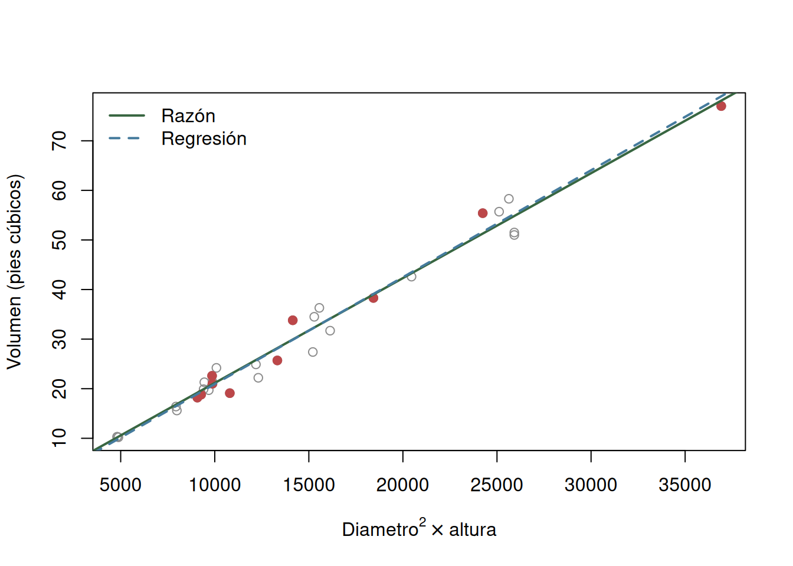
La figura 2.17 muestra que el volumen depende del auxiliar con una relación casi perfecta que parte del origen: los 31 puntos del censo se apiñan en torno a una recta creciente (correlación 0.99). Sobre esa nube, la muestra (puntos rojos) ajusta dos rectas casi coincidentes — la de razón (sólida, forzada al origen) y la de regresión (discontinua, con intercepto). Como la dispersión vertical es pequeña, los residuos son cortos y usar el auxiliar elimina gran parte de la variabilidad que castigaba al MAS.
2.8.2 Gráfica 2: residuos de proporcionalidad
plot(s_mas$x_aux, e_razon, pch = 19, col = "#386641",
xlab = expression(Diametro^2 %*% altura), ylab = "Residuo de razón")
abline(h = 0, lty = 2)
lines(lowess(s_mas$x_aux, e_razon), col = "#bc4749", lwd = 2)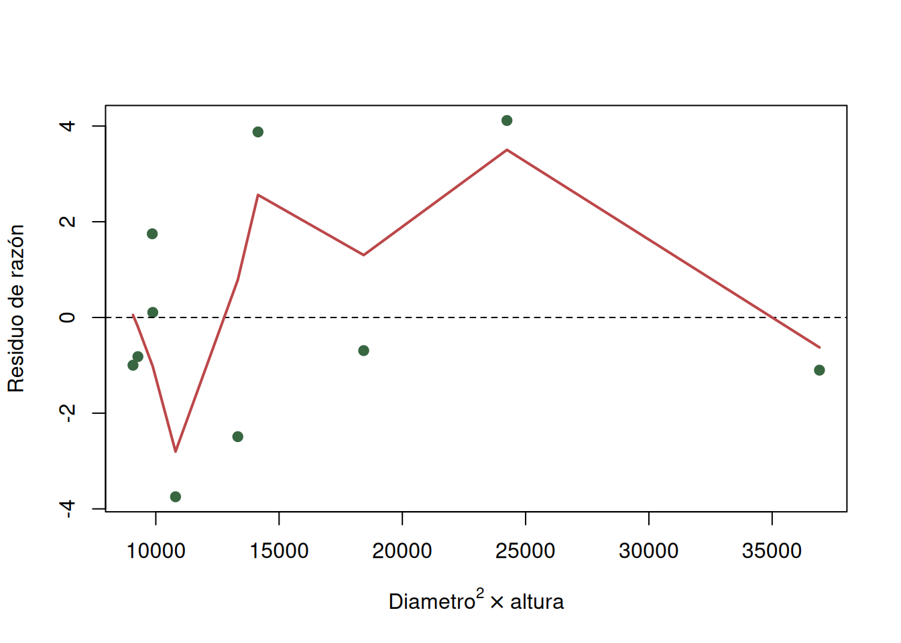
La figura 2.18 examina los residuos de la razón frente al auxiliar: se reparten alrededor de cero sin pendiente ni curvatura clara, y la suavizada (roja) apenas se desvía de la línea horizontal. Eso confirma que la proporcionalidad describe bien todo el rango y que no queda estructura que un estimador más flexible deba rescatar. Una tendencia residual advertiría que una razón constante no describe bien todo el rango; una correlación alta no basta, importa la forma y el comportamiento de los residuos.
2.8.3 Gráfica 3: precisión por repetición
set.seed(2209)
rep_aux <- t(replicate(B, {
z <- U[sample.int(N, n), ]
r <- sum(z$Volume) / sum(z$x_aux)
b <- cov(z$x_aux, z$Volume) / var(z$x_aux)
c(MAS = N * mean(z$Volume),
razon = r * X_aux,
regresion = N * (mean(z$Volume) + b * (mean(U$x_aux) - mean(z$x_aux))))
}))
metricas_aux <- t(vapply(as.data.frame(rep_aux), metricas_repeticion,
numeric(3), verdad = verdad_arboles["total"]))
round(metricas_aux, 3)
#> sesgo DE_empirica RMSE
#> MAS -2.835 132.785 132.793
#> razon -0.337 20.378 20.377
#> regresion -0.098 22.751 22.747boxplot(as.data.frame(rep_aux), col = c("grey80", "#6a994e", "#457b9d"),
ylab = "Total estimado de volumen")
abline(h = verdad_arboles["total"], lty = 2)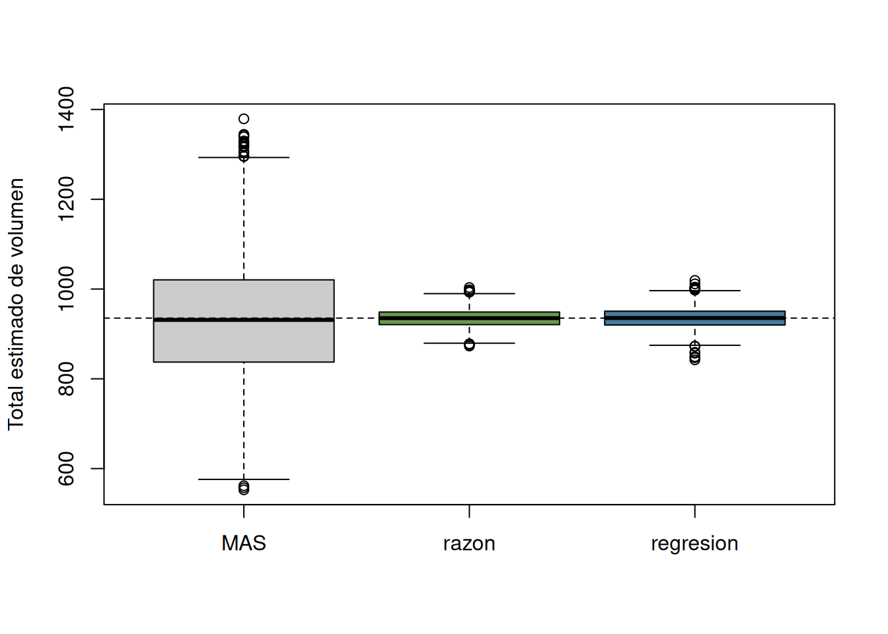
La figura 2.19 distribuye el total estimado en 3000 repeticiones. La caja del MAS es muy ancha (DE 132.8): el total oscila lejos de la verdad (935.3, línea discontinua). Las cajas de razón y regresión son estrechas (DE 20.4 y 22.8) y centradas sobre la verdad. Con el auxiliar, la incertidumbre del total cae a cerca de un sexto respecto del MAS.
2.8.4 Gráfica 4: sesgo y RMSE
op <- par(mfrow = c(1, 2), mar = c(5, 4, 2, 1))
barplot(abs(metricas_aux[, "sesgo"]), names.arg = rownames(metricas_aux),
col = "#bc4749", las = 2, ylab = "Sesgo absoluto")
barplot(metricas_aux[, "RMSE"], names.arg = rownames(metricas_aux),
col = "#386641", las = 2, ylab = "RMSE")
par(op)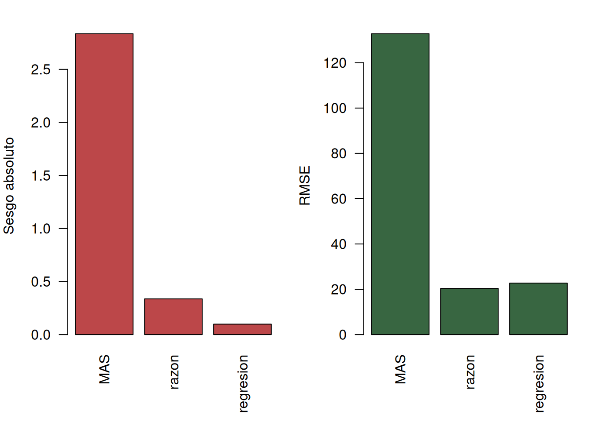
La figura 2.20 resume las dos métricas. El sesgo absoluto es pequeño en los tres (regresión −0.10, razón −0.34, MAS −2.84), pero el RMSE lo domina la varianza: 132.79 para el MAS frente a 20.38 (razón) y 22.75 (regresión). La razón asume un sesgo ligeramente mayor que la regresión a cambio del mejor RMSE; la regresión, al estimar también el intercepto con solo diez puntos, paga una pequeña penalización de varianza. La razón puede aceptar un sesgo pequeño a cambio de una reducción importante de varianza. La comparación debe hacerse bajo el diseño real y con un auxiliar que estuviera disponible antes de medir la respuesta.
2.9 Comparación y decisión
Las métricas siguientes reúnen los estimadores del total de volumen para la población de 31 árboles. Conglomerados y dos etapas no se mezclan en esta tabla porque estiman tallos en otra población y otra escala.
comparacion_arboles <- rbind(
MAS = c(estimacion = unname(est_mas["total"]),
EE = unname(se_mas["total"]),
sesgo_empirico = metricas_st["MAS", "sesgo"],
DE_empirica = metricas_st["MAS", "DE_empirica"],
RMSE = metricas_st["MAS", "RMSE"]),
estratificado = c(estimacion = unname(est_st["total"]),
EE = unname(se_st["total"]),
sesgo_empirico = metricas_st["proporcional", "sesgo"],
DE_empirica = metricas_st["proporcional", "DE_empirica"],
RMSE = metricas_st["proporcional", "RMSE"]),
sistematico = c(estimacion = unname(est_sys["total"]),
EE = unname(se_sys_diseno["total"]),
metricas_repeticion(todos_sys[, "total"],
verdad_arboles["total"])),
razon = c(estimacion = Y_razon, EE = SE_razon,
sesgo_empirico = metricas_aux["razon", "sesgo"],
DE_empirica = metricas_aux["razon", "DE_empirica"],
RMSE = metricas_aux["razon", "RMSE"])
)
round(comparacion_arboles, 3)
#> estimacion EE sesgo_empirico DE_empirica RMSE
#> MAS 1022.690 156.495 1.158 129.351 129.335
#> estratificado 850.192 68.678 1.383 72.767 72.768
#> sistematico 1009.050 67.056 0.000 68.164 67.056
#> razon 940.565 20.595 -0.337 20.378 20.377La tabla ordena los cuatro estimadores por su RMSE de largo plazo, la métrica de comparación imparcial. El MAS (RMSE 129.34) es la referencia: no aprovecha la estructura del marco y paga la variabilidad completa de las unidades. Estratificado (72.77) y sistemático (67.06) lo reducen casi a la mitad al explotar, respectivamente, la homogeneidad de los estratos y la cobertura del orden por diámetro; sistemático gana ligeramente porque el gradiente de volumen con el diámetro es casi monótono. La razón (20.38) lo reduce a cerca de un sexto al usar un auxiliar altamente correlacionado (0.99). Los sesgos empíricos son pequeños en todos los diseños (−0.34 a 1.38): son insesgados o casi, y las diferencias de RMSE provienen de la varianza, no del sesgo. No debe leerse solo la columna de estimación puntual: el estratificado da 850.19 y el sistemático 1009.05, a lados opuestos de la verdad (935.3); una sola realización puede caer a un lado u otro, y solo la repetición revela que sistemático es más estable. Cada ganancia exige su condición operativa — estratos conocidos antes de muestrear, orden y periodicidad estudiados, auxiliar disponible antes de medir — y ninguno repara una selección no probabilística.
- MAS es la referencia cuando el marco es completo y no hay estructura útil.
- Estratificación es defendible si los estratos se conocen antes de muestrear y separan heterogeneidad o dominios importantes.
- Sistemático mejora cobertura, pero obliga a estudiar orden, periodicidad y estimación de varianza.
- Conglomerados reducen desplazamiento; su costo estadístico depende de la semejanza interna y del número de unidades primarias.
- Dos etapas equilibran cobertura dentro de grupos y costo, pero exigen conservar probabilidades y variación de ambas etapas.
- Razón o regresión aprovechan un marco auxiliar; no reparan una selección no probabilística ni una relación inestable.
2.10 Reproducibilidad y alcance
Las comparaciones repiten mecanismos de selección sobre dos censos observados. No demuestran que la clasificación de precisión se mantenga en otro bosque. En un estudio nuevo deben conservarse marco, versiones de auxiliares, cortes de estrato, identificadores de conglomerado, probabilidades, arranques, unidades, costos y respuesta ante no observación.
list(
archivos = c("datasets::trees", "vegan::BCI", "vegan::BCI.env"),
version_vegan = as.character(packageVersion("vegan")),
version_R = R.version.string,
estimandos_arboles = names(verdad_arboles),
umbral_volumen = 30,
umbral_riqueza = 95,
ids_MAS = sort(ids_mas),
ids_estratificados = sort(ids_st),
arranque_sistematico = arranque,
conglomerados_BCI = clusters_s,
ids_segunda_etapa = sort(ids_2e)
)
#> $archivos
#> [1] "datasets::trees" "vegan::BCI" "vegan::BCI.env"
#>
#> $version_vegan
#> [1] "2.7.5"
#>
#> $version_R
#> [1] "R version 4.5.2 (2025-10-31)"
#>
#> $estimandos_arboles
#> [1] "media" "total" "proporcion" "DE"
#>
#> $umbral_volumen
#> [1] 30
#>
#> $umbral_riqueza
#> [1] 95
#>
#> $ids_MAS
#> [1] 5 8 9 12 15 17 19 24 26 31
#>
#> $ids_estratificados
#> [1] 4 5 6 11 12 13 15 22 24 28
#>
#> $arranque_sistematico
#> [1] 31
#>
#> $conglomerados_BCI
#> [1] 3 8 9 10
#>
#> $ids_segunda_etapa
#> [1] 11 12 15 37 38 40 41 43 44 47 48 50
sessionInfo()
#> R version 4.5.2 (2025-10-31)
#> Platform: x86_64-pc-linux-gnu
#> Running under: Ubuntu 24.04.4 LTS
#>
#> Matrix products: default
#> BLAS: /usr/lib/x86_64-linux-gnu/openblas-pthread/libblas.so.3
#> LAPACK: /usr/lib/x86_64-linux-gnu/openblas-pthread/libopenblasp-r0.3.26.so; LAPACK version 3.12.0
#>
#> locale:
#> [1] LC_CTYPE=C.UTF-8 LC_NUMERIC=C LC_TIME=C.UTF-8
#> [4] LC_COLLATE=C.UTF-8 LC_MONETARY=C.UTF-8 LC_MESSAGES=C.UTF-8
#> [7] LC_PAPER=C.UTF-8 LC_NAME=C LC_ADDRESS=C
#> [10] LC_TELEPHONE=C LC_MEASUREMENT=C.UTF-8 LC_IDENTIFICATION=C
#>
#> time zone: UTC
#> tzcode source: system (glibc)
#>
#> attached base packages:
#> [1] stats graphics grDevices datasets utils methods base
#>
#> loaded via a namespace (and not attached):
#> [1] digest_0.6.39 permute_0.9-10 codetools_0.2-20 fastmap_1.2.0
#> [5] Matrix_1.7-4 mgcv_1.9-3 xfun_0.56 lattice_0.22-7
#> [9] splines_4.5.2 parallel_4.5.2 knitr_1.51 htmltools_0.5.9
#> [13] rmarkdown_2.30 cli_3.6.5 grid_4.5.2 renv_1.2.4
#> [17] vegan_2.7-5 compiler_4.5.2 tools_4.5.2 cluster_2.1.8.1
#> [21] nlme_3.1-168 evaluate_1.0.5 yaml_2.3.12 rlang_1.1.7
#> [25] jsonlite_2.0.0 MASS_7.3-65La lista fija lo esencial para reproducir cualquier número del capítulo, y en ella conviven dos tipos de decisión. Por un lado, parámetros que el analista fija: los estimandos (media, total, proporción y DE), los umbrales de volumen (30) y de riqueza (95), los cortes de estrato y la definición de los conglomerados. Por otro, realizaciones aleatorias que solo quedan identificadas si se registra el sorteo: los diez identificadores del MAS y los diez de la estratificación, el arranque sistemático (31), los cuatro conglomerados (3, 8, 9 y 10) y las doce hectáreas de segunda etapa. Registrar esos sorteos junto con semilla, fuentes de datos y las versiones de R y de vegan que imprime el sessionInfo() del bloque anterior es lo que permite regenerar exactamente las mismas muestras y estimadores; el sessionInfo() cierra esa cadena computacional. Pero reproducir el cálculo no equivale a replicar la conclusión: como indica el párrafo anterior, la comparación de precisión se realizó sobre dos censos observados y su ordenamiento no debe asumirse válido en otro bosque. En un estudio nuevo hay que fijar y documentar marco, auxiliares, cortes, probabilidades y costos propios, no copiar los umbrales ni los identificadores de aquí.
2.11 Ejercicios teóricos y numéricos
Estos ejercicios son cerrados y progresivos. En todos los casos declare primero la población, la unidad de muestreo, el diseño y el estimando. Distinga la DE de las unidades del EE del estimador, conserve la corrección por población finita cuando corresponda y exprese cada resultado con sus unidades. Use resultados no redondeados durante los cálculos y redondee solo al presentar.
2.11.1 Ejercicios teóricos
Ejercicio T1. Población, unidad y estimando
Para cada situación, identifique población finita, unidad de muestreo, unidad de observación, marco y un estimando coherente. Indique además qué información falta para sustentar inferencia probabilística.
- Un parque se divide en 500 cuadrantes y se seleccionan 30 para contar plantas de una especie.
- De 80 colonias de aves se seleccionan 20 y se cuentan todos los nidos activos de cada colonia elegida.
- Una cuenca contiene 120 segmentos de río; se seleccionan 12 y dentro de cada uno se eligen tres puntos para medir oxígeno disuelto.
- Se miden los primeros 40 árboles encontrados a menos de 20 m de una carretera.
Explique por qué el cuarto caso no se convierte en probabilístico por calcular una media y un intervalo convencional.
Ejercicio T2. Propiedades del MAS
En un MAS sin reemplazo, \(P(I_i=1)=n/N\). Use indicadores de inclusión para demostrar que \(N\bar y_s\) es insesgado para el total \(Y\). Después responda:
- ¿Por qué la corrección finita tiende a cero cuando \(n=N\)?
- ¿Puede una población tener una DE grande y la media estimarse con EE pequeño?
- ¿Qué componente cambia al aumentar \(n\): la variabilidad de las unidades, la variabilidad del estimador o ambas?
Ejercicio T3. Estratificación y asignación
Considere una población dividida en tres hábitats. Explique:
- por qué \(\frac{1}{3}\sum_h\bar y_h\) puede ser incorrecto;
- qué condiciones favorecen una ganancia de precisión por estratificación;
- por qué garantizar observaciones en un hábitat raro puede ser valioso aunque no minimice la varianza global;
- qué información previa necesita la asignación de Neyman y por qué no debe obtenerse de la respuesta completa que se pretende estimar.
Ejercicio T4. Orden y muestreo sistemático
Compare una lista ordenada por un gradiente ambiental, una lista en orden aleatorio y una lista con periodicidad igual al intervalo de muestreo. Para cada caso anticipe si el sistemático podría ser más preciso, parecido o menos preciso que un MAS. Explique por qué cambiar el arranque no elimina necesariamente la periodicidad y por qué una sola secuencia suele ser insuficiente para estimar la varianza de diseño.
Ejercicio T5. Conglomerados, etapas y pseudorreplicación
Un estudio selecciona cuatro bosques y mide 25 árboles en cada bosque.
- ¿Cuántas unidades primarias independientes sustentan la inferencia?
- ¿Qué diferencia habría entre censar los 25 árboles y seleccionar cinco dentro de cada bosque?
- Interprete \(\rho=0\), \(\rho>0\) y \(\rho<0\) en términos de semejanza interna.
- Con \(L=25\) y \(\rho=0.12\), calcule el
DEFFaproximado y explique por qué 100 árboles no equivalen necesariamente a un MAS de 100 árboles.
Ejercicio T6. Información auxiliar
Compare estimación de razón y de regresión bajo estos patrones:
- relación lineal fuerte que pasa cerca del origen;
- relación lineal fuerte con intercepto distinto de cero;
- relación curvada;
- auxiliar medido después de observar la respuesta solo en la muestra.
Indique en qué casos la razón es defendible, cuándo preferiría regresión y por qué ninguno de los dos estimadores corrige un marco que excluye unidades difíciles de alcanzar.
2.11.2 Ejercicios numéricos
Ejercicio N1. Media y total bajo MAS
De una población de \(N=80\) parcelas se selecciona un MAS sin reemplazo de \(n=10\). Las biomasas observadas, en kg por parcela, son
\[ 12,\ 15,\ 9,\ 18,\ 14,\ 11,\ 16,\ 20,\ 13,\ 17. \]
- Calcule media, varianza y DE muestrales.
- Estime la biomasa media y total de las 80 parcelas.
- Calcule sus EE con corrección por población finita.
- Construya IC del 95% usando \(t_{9}\).
- Interprete el intervalo del total en términos de repetición del diseño.
Ejercicio N2. Proporción y esfuerzo
Use la muestra del ejercicio N1 y defina como biomasa alta una parcela con más de 15 kg.
- Construya el indicador y estime la proporción poblacional.
- Calcule la varianza muestral del indicador, su EE con corrección finita y un IC del 95% basado en \(t_9\), restringido a \([0,1]\).
- Para planificar otro estudio, use \(P\approx0.40\) y calcule el EE aproximado para \(n=10,20,40\), manteniendo \(N=80\).
- Explique por qué el EE no se reduce exactamente en proporción a \(1/\sqrt n\) cuando la fracción de muestreo es grande.
Ejercicio N3. Estimación estratificada
Una región de 100 parcelas está dividida en tres hábitats. Se obtiene la siguiente información de muestras aleatorias independientes:
| Hábitat \(h\) | \(N_h\) | \(n_h\) | \(\bar y_h\) | \(s_h^2\) |
|---|---|---|---|---|
| Bosque | 40 | 5 | 12 | 9 |
| Matorral | 35 | 5 | 20 | 16 |
| Pastizal | 25 | 5 | 30 | 25 |
La respuesta está en individuos por parcela.
- Calcule pesos \(W_h\), media estratificada y total.
- Calcule la varianza y el EE de la media y del total.
- Construya un IC aproximado del 95% para la media usando 12 grados de libertad.
- Compare la media ponderada con la media simple de las tres medias de estrato y explique la diferencia.
Ejercicio N4. Asignación proporcional y de Neyman
Use \(N_h=(40,35,25)\) y \(S_h=(3,4,5)\) para distribuir \(n=20\) observaciones.
- Obtenga una asignación proporcional entera que sume 20.
- Obtenga la asignación de Neyman, redondeando por restos mayores.
- Para cada asignación calcule
\[ \widehat V(\bar y_{st})= \sum_hW_h^2\left(1-\frac{n_h}{N_h}\right)\frac{S_h^2}{n_h}. \]
- Interprete la diferencia y señale por qué esta comparación supone conocidas las DE de estrato.
Ejercicio N5. Todos los arranques sistemáticos
Una población ordenada contiene los valores \(y_i=i\) para \(i=1,\ldots,24\). Se desea una muestra sistemática de \(n=6\), de modo que \(k=4\) y el arranque se elige uniformemente entre 1 y 4.
- Escriba las cuatro muestras posibles.
- Estime el total con cada arranque usando \(\widehat Y=24\bar y_s\).
- Calcule la media de los cuatro estimadores y compárela con el total verdadero.
- Calcule la DE exacta de diseño usando denominador cuatro.
- Explique por qué esa DE es calculable en este ejercicio, pero no a partir de una única secuencia observada en una población desconocida.
Ejercicio N6. Conglomerados de una etapa
Una población contiene \(M=8\) conglomerados de \(L=4\) unidades. Se seleccionan \(m=3\) conglomerados por MAS y sus totales observados son 42, 55 y 47 individuos.
- Estime el total y la media para las \(N=32\) unidades.
- Calcule la varianza y el EE del total mediante
\[ \widehat V(\widehat Y_c)= M^2\left(1-\frac mM\right)\frac{s_t^2}{m}. \]
- Obtenga el EE de la media y un IC del 95% para el total con dos grados de libertad.
- Explique por qué los grados de libertad dependen de tres conglomerados y no de doce unidades internas.
Ejercicio N7. Muestreo en dos etapas
Una población tiene \(M=6\) conglomerados de \(L=5\) unidades. Se seleccionan \(m=3\) conglomerados y \(l=2\) unidades dentro de cada uno. Las respuestas son:
| Conglomerado | Valores observados |
|---|---|
| 1 | 8, 12 |
| 2 | 15, 17 |
| 3 | 9, 13 |
- Calcule \(\widehat t_h=L\bar y_h\) y \(\widehat V_h=L^2(1-l/L)s_h^2/l\) para cada conglomerado.
- Estime el total poblacional con \((M/m)\sum_h\widehat t_h\).
- Separe y calcule los componentes entre y dentro de conglomerados de \(\widehat V(\widehat Y_{2e})\).
- Calcule total, media, EE respectivos e IC del 95% para el total con dos grados de libertad.
- Indique qué componente desaparecería si se censaran las cinco unidades de cada conglomerado seleccionado.
Ejercicio N8. Estimación de razón
En un MAS de \(n=8\) unidades de una población de \(N=50\) se obtiene \(\sum_s x_i=160\), \(\sum_s y_i=240\) y \(s_e^2=4\) para los residuos de razón. El total auxiliar conocido es \(X=1000\). Además, la varianza muestral de \(y\) es 100.
- Calcule \(\widehat R\) y \(\widehat Y_R\).
- Calcule el EE linealizado y un IC del 95% usando \(t_7\).
- Calcule el EE del total MAS con \(s_y^2=100\).
- Compare ambos EE y explique qué propiedad de los residuos produce la diferencia.
- Señale qué diagnóstico gráfico revisaría antes de recomendar la razón.
2.11.3 Ejercicios guiados en R
Ejercicio R1. Precisión y tamaño de muestra con trees
Use los objetos U, N y x_aux creados en el capítulo. Con semilla 2210 y 1000 repeticiones, compare MAS y razón para \(n=6,10,15\).
- En cada repetición estime el total por ambos métodos.
- Calcule sesgo y RMSE respecto de
sum(U$Volume). - Grafique RMSE frente a tamaño de muestra.
- Explique si la ventaja relativa del auxiliar se mantiene al aumentar \(n\) y por qué el resultado sigue limitado a estas 31 filas.
Ejercicio R2. Orientación de conglomerados con BCI
Use marco_bci$tallos. Compare dos particiones que observan 20 hectáreas:
- diez columnas de cinco hectáreas, seleccionando cuatro columnas;
- cinco filas de diez hectáreas, seleccionando dos filas.
Para cada orientación calcule ICC, DEFF y la DE exacta del estimador de la media enumerando todas las selecciones de unidades primarias. Dibuje ambas particiones y explique por qué cambiar la geometría modifica precisión aunque se conserve el área total observada.
Ejercicio R3. Estratificación: asignación y ganancia de precisión con trees
Use los objetos U, N, Nh, estrato, nh (proporcional) y nh_neyman creados en el capítulo. Con semilla 2211 y 1000 repeticiones compare el total de volumen estimado con un MAS y con cada asignación estratificada.
- En cada repetición estime el total con los tres esquemas (diez unidades cada uno).
- Calcule sesgo, DE empírica y RMSE respecto de
sum(U$Volume). - Descomponga la variación de las unidades entre una componente dentro de los estratos (promedio de las varianzas intraestrato) y una entre estratos (varianza de las medias) y relacione ese cociente con la ganancia del proporcional frente al MAS.
- Explique por qué la asignación de Neyman mejora aún la precisión y qué información previa exigiría en un estudio real.
Ejercicio R4. Sistemático: arranques y sensibilidad al orden con trees
Con \(N=31\) y \(n=10\), genere la secuencia sistemática de diez posiciones para cualquier arranque y enumere los 31 arranques del total en tres órdenes del marco.
- Considere los órdenes por diámetro (el del archivo), por volumen (retrospectivo) y una permutación fija generada con semilla 2212.
- Para cada orden, calcule la media de los 31 totales, la DE exacta de diseño y el RMSE respecto de
sum(U$Volume). - Dibuje los totales por arranque para el orden más y el menos eficiente.
- Explique qué revela la permutación aleatoria sobre el papel del gradiente y por qué ordenar por volumen es solo un diagnóstico retrospectivo.
Ejercicio R5. Auxiliar: razón frente a regresión con trees
Use U y x_aux. Con semilla 2213 y 1000 repeticiones, compare los estimadores de razón y de regresión del total.
- En cada repetición estime el total por ambos métodos.
- Calcule sesgo, DE empírica y RMSE respecto de
sum(U$Volume). - Ajuste la recta de regresión en una muestra y examine los residuos frente a
x_auxy su suavizado. - Explique por qué la razón gana en RMSE pese a asumir proporcionalidad y en qué situaciones una regresión con intercepto sería preferible.
NotaResultados breves de comprobación
T1. En los tres primeros casos el marco puede ser, respectivamente, la lista o mapa de 500 cuadrantes, 80 colonias y 120 segmentos con sus puntos elegibles. Las unidades primarias son cuadrante, colonia y segmento. En el cuarto caso la unidad observada es un árbol accesible desde la carretera, pero no se conoce una probabilidad positiva de inclusión para todos los árboles del bosque; un IC convencional no corrige esa cobertura.
T2. Como \(N\bar y_s=(N/n)\sum_iI_i y_i\) y \(E(I_i)=n/N\), su esperanza es \(\sum_i y_i=Y\). Si \(n=N\), no quedan muestras alternativas y el EE es cero. La DE de las unidades no cambia al aumentar \(n\); disminuye el EE del estimador.
T3. Las medias se ponderan por \(W_h=N_h/N\). La ganancia de precisión requiere estratos internamente homogéneos y diferentes entre sí. La representación de un dominio puede ser un objetivo independiente de minimizar la varianza. Neyman requiere DE previas, obtenidas de pilotos o estudios anteriores.
T4. Un gradiente suave suele favorecer la cobertura sistemática; un orden aleatorio tiende a aproximarla al MAS; una periodicidad alineada puede aumentar mucho el error. El arranque desplaza el patrón, pero no cambia su intervalo.
T5. Hay cuatro unidades primarias independientes. Medir cinco árboles en cada bosque crea dos etapas; censar 25 crea conglomerados de una etapa. Con \(L=25\) y \(\rho=0.12\), \(DEFF=1+24(0.12)=3.88\), por lo que la semejanza interna reduce la información efectiva.
T6. La razón es más defendible para una relación estable cercana al origen. Un intercepto favorece regresión; curvatura exige revisar la forma o transformar el auxiliar. Una variable medida solo después de observar \(y\) no era auxiliar de marco. Ningún ajuste recupera unidades con probabilidad de inclusión cero.
N1. \(\bar y=14.5\) kg, \(s^2=11.3889\) kg\(^2\), \(s=3.3747\) kg, \(EE(\bar y)=0.9983\) kg. El total estimado es 1160 kg con EE 79.861 kg. El IC del 95% para la media es \([12.242,16.758]\) kg y para el total, \([979.342,1340.658]\) kg.
N2. El indicador contiene cuatro unos: \(\widehat P=0.40\), \(s_z^2=0.2667\) y \(EE=0.1528\). El IC restringido es \([0.054,0.746]\). Usando \(P(1-P)\) para planificación, los EE aproximados para \(n=10,20,40\) son 0.1449, 0.0949 y 0.0548.
N3. \(W=(0.40,0.35,0.25)\), \(\widehat{\bar Y}_{st}=19.3\) individuos por parcela y \(\widehat Y_{st}=1930\) individuos. La varianza del total es 8380, \(EE(\widehat Y)=91.542\) y \(EE(\widehat{\bar Y})=0.9154\). El IC para la media es \([17.305,21.295]\). La media no ponderada de estratos sería 20.667 y responde a otra ponderación poblacional.
N4. La asignación proporcional es \((8,7,5)\) y la de Neyman, \((6,7,7)\). Las varianzas anticipadas de la media son 0.6180 y 0.5887, respectivamente. La mejora de Neyman depende de que \(S_h=(3,4,5)\) sea información previa válida.
N5. Las muestras comienzan en 1, 2, 3 y 4 y avanzan de cuatro en cuatro. Los totales estimados son 264, 288, 312 y 336; su media es el total verdadero 300. La DE exacta de diseño es 26.8328.
N6. \(\widehat Y_c=384\) individuos y \(\widehat{\bar Y}_c=12\) individuos por unidad. La varianza del total es 573.333, su EE es 23.944 y el EE de la media, 0.7483. Con dos grados de libertad, el IC del total es aproximadamente \([280.976,487.024]\).
N7. Los totales estimados de conglomerado son \((50,80,55)\) y sus varianzas internas estimadas, \((60,15,60)\). El componente entre conglomerados es 1550 y el componente interno es 270; la varianza total es 1820. Se obtiene \(\widehat Y_{2e}=370\), \(EE=42.661\), \(\widehat{\bar Y}=12.333\) y \(EE(\widehat{\bar Y})=1.422\). El IC del total es \([186.443,553.557]\). Al censar las unidades internas desaparece el componente 270.
N8. \(\widehat R=1.5\) y \(\widehat Y_R=1500\). El EE linealizado es 32.404 y el IC, \([1423.377,1576.623]\). El estimador MAS tiene el mismo valor puntual en este ejercicio, pero EE 162.019. La reducción procede de residuos mucho menos variables que \(y\); deben revisarse relación con el origen y residuos frente a \(x\).
R1. Con la semilla indicada, los RMSE aproximados de MAS para \(n=6,10,15\) son 186.94, 134.77 y 94.98; para razón son 28.54, 20.25 y 13.90. El sesgo de razón permanece pequeño frente a su DE en las tres comparaciones.
R2. Para columnas de cinco hectáreas, \(\rho\approx0.2140\), \(DEFF\approx1.8562\) y la DE exacta de la media es 10.1305 tallos/ha. Para filas de diez hectáreas, \(\rho\approx0.3109\), \(DEFF\approx3.7982\) y la DE exacta es 14.7929 tallos/ha. La orientación de filas agrupa unidades más semejantes en esta población observada.
R3. La asignación proporcional es \((4,3,3)\) y la de Neyman, \((3,3,4)\); el estrato grande aporta diez de las 31 unidades pero también la mayor desviación \(S_h\approx13.2\). Los RMSE del total son MAS 132.94, proporcional 71.66 y Neyman 62.81. La variación dentro de los estratos (promedio) es 76.0 y la varianza de las medias entre estratos, 292.4; como la heterogeneidad entre supera a la interna, el proporcional reduce el RMSE frente al MAS y Neyman lo reduce más volcando muestra en el estrato más variable.
R4. La DE exacta de diseño del total es 67.06 para el orden por diámetro, 61.68 para el orden por volumen y 77.9 para la permutación aleatoria. En los tres órdenes la media de los 31 totales coincide con el total verdadero (935.3), lo que confirma insesgadez; el orden aleatorio destruye el gradiente y pierde la precisión que produce la cobertura sistemática.
R5. Con la semilla indicada, el RMSE de la razón es 20.51 y el de la regresión, 23.02. Ambos quedan muy por debajo del MAS; la razón, aunque asume proporcionalidad, logra el menor RMSE por su menor varianza, y la regresión paga una pequeña penalización por estimar el intercepto con diez puntos. Los residuos deben revisarse frente a x_aux antes de preferir un modelo.
2.12 Actividad propuesta para el lector
Use el conjunto real datasets::attitude como población finita de 30 unidades y estime la media, el total, la proporción que supera un umbral previamente fijado y la DE de rating. Audite estructura, faltantes, duplicados, rangos y límites de procedencia; defina unidad, marco y estimandos; y compare un MAS, una estratificación previa por clases de complaints, y un sistemático sobre al menos dos órdenes. Use un auxiliar justificado para un estimador de razón o regresión. Para cada método documente probabilidades, pesos, estimador, EE e intervalo; repita selecciones sobre el marco observado para examinar sesgo, DE empírica, RMSE y cobertura; incluya al menos tres gráficas que expliquen selección, heterogeneidad e incertidumbre; y evalúe sensibilidad al tamaño de muestra, puntos de corte y orden. Finalmente, proponga cómo formar conglomerados y dos etapas si las 30 unidades pertenecieran a grupos naturales, indicando qué información adicional sería indispensable para ejecutar y analizar ese diseño.